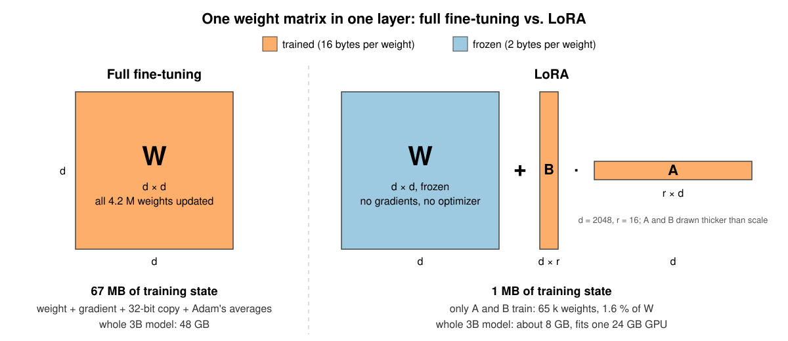
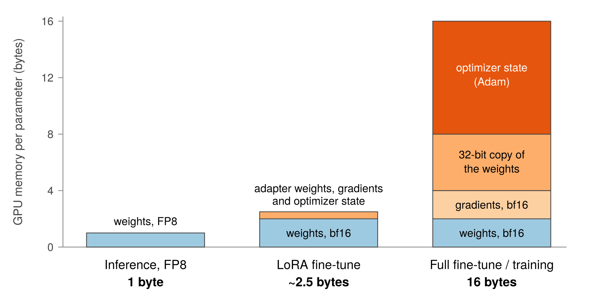
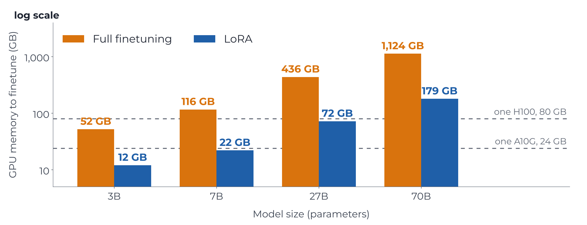
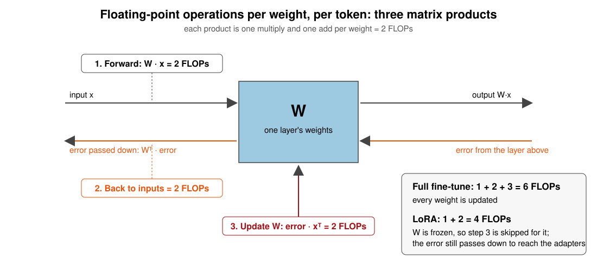
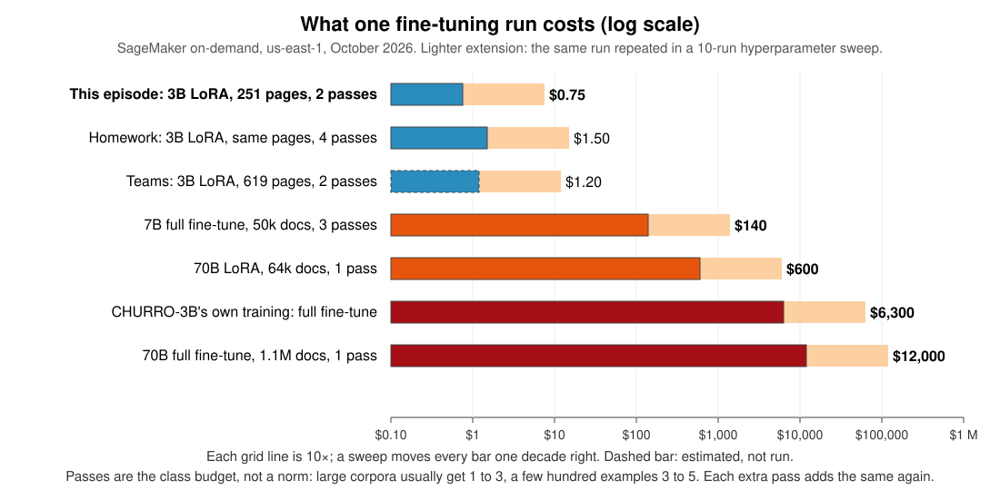

Fine-tuning a Vision-Language Model with Training Jobs
Last updated on 2026-11-11 | Edit this page
Overview
Questions
- When is fine-tuning worth it?
- What does a fine-tuning run cost, and how do I estimate that before launching it?
- How do I fine-tune a model as a SageMaker training job?
- How do I tell whether the fine-tune helped?
Objectives
- Explain what drives the cost of a fine-tuning run (model size × tokens × epochs × number of attempts), and what to do before launching one at any size: set a time cap, run a small slice first, write the estimate down, and checkpoint.
- Launch a LoRA fine-tune of a 3B vision-language model (CHURRO-3B) as
a
HuggingFacetraining job on a single 24 GB GPU, with tags, a unique job name and amax_runcap. - Read a job’s billable time and compare it to the estimate.
- Compare the base model and the fine-tuned model on held-out pages using the competition’s own character error rate (CER).
- Know how to scale the same job up to the full dataset (homework) and to multi-GPU instances for larger models.
Open the notebook from:
/ML_with_AWS_SageMaker/notebooks/09_Finetuning-BadgerScribe.ipynb.
Select the conda_pytorch kernel.
Joining at this episode
This episode stands on its own, and these are the four things the earlier episodes set up that it uses. Learners coming through the whole lesson have seen each one.
-
An S3 bucket of your own, from the S3 episode,
where every job’s outputs land. The notebook refers to it as
bucket_name. - A notebook instance, from the controllers episode, a small CPU machine running JupyterLab. It launches jobs and reads results. The GPU is never on it.
-
A role,
ml-sagemaker-use, which the notebook instance runs as and hands to every job, so nothing here asks you to sign in. -
Three tags on everything,
Name,ProjectandPurpose, which the shared account requires on every job and uses to attribute the bill.
Why fine-tune a model?
In the earlier training episodes, we built relatively small models
from scratch. That works when we have a well-defined problem and enough
training data, but it isn’t practical for tasks that require the broad
capabilities of a modern language or vision model with billions of
weights. Training one of those models from scratch takes thousands of
GPUs running for months, tens of millions of GPU-hours, and enormous
datasets. The PyTorch episode put numbers on that with
helpers.estimate_training_cost. One pass of a 7B language
model over a million papers came to about $1,270 on a
four-GPU box, and the models behind ChatGPT are far larger and trained
on far more.
Fortunately, we don’t have to start from scratch. Pretrained models already know how to interpret images, understand language, and generate text. Fine-tuning lets us build on those capabilities by training a model further on examples from our own task.
Consider historical handwriting recognition. A general-purpose vision-language model, such as the open-weight Qwen3.8-27B or a commercial one like Gemini, may be able to transcribe ordinary printed text and modern handwriting, yet struggle with nineteenth-century documents, unfamiliar letterforms, or the conventions used by a particular archive. Giving it better instructions can help, but there are limits to what prompting can accomplish when the model has never learned to recognize the writing itself.
Fine-tuning offers another approach. Show the model examples of the documents alongside their correct transcriptions, and train it to produce better results on similar material.
This can be surprisingly effective. CHURRO is a 3-billion-parameter vision-language model developed for historical text recognition. Its researchers fine-tuned an existing Qwen model on roughly 100,000 historical document pages and reported better transcription accuracy than Gemini 2.5 Pro at substantially lower inference cost (paper). Rather than using an increasingly large general-purpose model, they trained a smaller one to become particularly good at the task they cared about. The same pattern shows up in other fields:

That’s the approach we’ll explore in this episode. We’ll take CHURRO, which already specializes in historical documents, and adapt it further to a collection of handwritten German letters from UW-Madison’s Badger Scribe challenge.
How fine-tuning works
Fine-tuning uses the same basic training process we’ve already seen. The model makes predictions on training examples, we measure how far those predictions are from the correct answers, and gradient descent adjusts its parameters to reduce the error.
The difference is where we begin. Rather than initializing the model with random weights, we start with weights learned during an earlier, much larger training process. Our examples don’t need to teach the model everything about language or images. They only need to help it adapt what it already knows.
We could update every parameter in the model, which is called full fine-tuning. That’s how CHURRO itself was created. But even a relatively small model with 3 billion parameters is expensive to train this way, because training requires much more GPU memory than simply running the model.
LoRA adds new small weights beside the frozen model
The alternative to full fine-tuning is parameter-efficient fine-tuning, or PEFT, a family of methods that leave the pretrained weights frozen and train a small number of new parameters instead. Low-rank adaptation, or LoRA, is the most widely used form of PEFT. It keeps the pretrained weights frozen and adds small sets of trainable parameters to selected layers. Rather than directly changing a large weight matrix, LoRA learns a much smaller adjustment to its output.

Nothing in the original model is trained. The trained parameters are the new matrices, and they are a small fraction of the model’s size, under one percent in this episode. We still run the whole model during training, but we only calculate and store weight updates for the new matrices. That saves enough memory to fine-tune CHURRO on a single GPU with 24 GB of memory; the next section says how much.
LoRA also produces a relatively small adapter that we can save separately from the original model. To use the fine-tuned model later, we load the pretrained weights together with the adapter.
This makes LoRA particularly useful for research groups. We can take an existing open-weight model, adapt it to a specialized dataset, evaluate whether the adaptation helped, and keep the resulting model without the expense of full fine-tuning.
Training, full fine-tuning and LoRA on one scale
The GPU-hours put the three on one scale. Training from scratch is at the top, the full fine-tune that made CHURRO in the middle, and this episode’s LoRA run at the bottom.

Training from scratch and full fine-tuning do the same work per step. Every parameter is updated, so each one needs four things in GPU memory: the weight, its gradient, a 32-bit copy of the weight for the update, and the optimizer’s two running averages. That is 16 bytes per parameter, so a 3B model needs about 48 GB before activations, which means several GPUs. The two differ in how much data they go through, trillions of tokens against a hundred thousand pages. A LoRA run updates only the adapter. The model’s own weights stay frozen, and a frozen weight needs 2 bytes of memory and nothing else, so the same model fits one GPU.
Our task, transcribing historical German letters
For this exercise, we’ll use the Badger Scribe challenge, which asks participants to produce faithful transcriptions of scanned historical documents. The competition includes several kinds of archival material, but we’ll concentrate on letters from the Anna Seifert correspondence, held by the Max Kade Institute, 191 letters and postcards written between 1932 and 1942 by one woman to her son, transcribed by the Institute’s Kurrent Transcription Group.
These letters were written in Kurrent, a historical form of German handwriting whose letterforms differ substantially from modern cursive. Even a model trained on historical documents can struggle with it, making this a useful test of whether additional fine-tuning helps.
We have 295 labeled pages from this collection. We’ll reserve approximately 15% for evaluation and train on the remaining 251, using the corresponding human-produced transcriptions as our targets.
| split | pages | documents | label source |
|---|---|---|---|
| train | 295 | 4 letter bundles | all human-transcribed, ~620 characters per page |
| test | 141 | 5 other letter bundles | labels held by Kaggle |
Our goal is straightforward. Does fine-tuning CHURRO on these examples improve its ability to transcribe previously unseen pages?
We’ll measure that using character error rate (CER), the same metric used by the competition. A lower CER means the transcription contains fewer character-level mistakes.
What we’ll do, and what it will cost
We’ll run the training on AWS SageMaker as a training job. SageMaker will provision a GPU instance for it, run our training script, save the model adapter and evaluation results, and shut down the instance when the job finishes. The GPU is rented for the job and nothing else, so there is no GPU notebook to remember to stop afterwards.
The entire run, including evaluation before and after fine-tuning,
takes about 33 minutes on an ml.g5.xlarge instance and
costs approximately $0.75, based on our measured October
2026 run. That small cost is deliberate. Fine-tuning can become
expensive when we move to larger models, larger datasets, or repeated
experiments, so we’ll learn how to estimate memory and runtime
requirements before launching the job. We’ll also set a time limit to
prevent an unexpected training run from continuing indefinitely.
By the end, we’ll have fine-tuned a vision-language model, compared its predictions against the original model, and checked how closely the actual bill matched our estimate.
Three places to run this fine-tune
This episode runs the fine-tune as a SageMaker job. The same model,
data and scripts also run on Google Colab’s free GPU and on UW-Madison’s
Center for High Throughput Computing, as two standalone versions in the
lesson repository’s finetune_extras/ folder. Pick by what
you have and what you want to learn.
| AWS SageMaker | Google Colab | CHTC | |
|---|---|---|---|
| Who can use it | Anyone with an AWS account and a card or credits | Anyone with a Google account | UW-Madison researchers and students, with a faculty sponsor |
| Cost of this run | About $0.75
|
Free | Free |
| GPU | A10G, 24 GB, bf16 | T4, 16 GB, no bf16, so the frozen weights go to 4-bit | L40S, A100, H100 or H200, 48 to 141 GB, bf16; NVLink on the A100, H100 and H200 servers |
| Time for this run | 33 minutes billed, after one to ten minutes waiting for an instance | About an hour and a half, starts at once if a GPU is free | About 20 minutes, after a queue wait of minutes to hours |
| Largest LoRA fine-tune | No hard limit, only cost. 7B on the lesson’s $1.41/h
card, 70B at $13/h |
about 7B, in 4-bit | about 50B in bf16 on an H200, a 70B in 4-bit on one 80 GB card, larger across a server’s cards |
| Largest full fine-tune | No hard limit, only cost. 3B at $7/h, 70B at
$127/h |
none, a 3B needs 52 GB | a 7B on one H200, a 70B across the H100 or H200 servers’ cards |
| What you learn beyond the fine-tune | Estimating and reading a bill, tags, job guard rails | Fitting a model into a small GPU | Describing a job for a scheduler, containers, staging data |
For fine-tuning, CHTC is the first choice for UW-Madison researchers. It is free, its GPUs are large, and the queue is the only price. Colab is for practicing LoRA with nothing to set up. The cloud has the newest and fastest GPUs, and a fine-tune on a large dataset sometimes needs them, but that is where the bills in this episode’s cost table come from, so it is the choice when the other two cannot do the job, not the default.
None of the three runtime limits is a wall. The training script
writes a checkpoint at the end of every epoch and resumes from it, so a
run longer than Colab’s session, CHTC’s job lane or an AWS
max_run is several runs that each pick up where the last
one stopped. Each version says where its checkpoints go.
What the class account allows
Do not fully fine-tune anything in this workshop, and do not LoRA
fine-tune a model larger than 30B on the class account. The limit comes
from the instances the account allows, which are single-GPU and top out
at the 48 GB ml.g6e.xlarge. On your own account you would
rent a bigger instance. A 7B LoRA needs about 22 GB and fits the 24 GB
card the class uses. A LoRA in bf16 fits the 48 GB card up to about 17B.
Beyond that, on this account, the frozen weights go to 4-bit, which the
training script does with --load_in_4bit 1, and a 30B model
in 4-bit needs about 34 GB. A full fine-tune of even a 7B model needs
more memory than any instance the account allows. The larger runs appear
in this episode only as estimates, so that you can recognize one before
you launch it.
Step 0: Estimate the cost before you launch anything
Before launching a fine-tune, write down what it should cost, with the estimator functions the lesson provides. If the bill comes in at three times your number, something is wrong, and you want to find that out on the first run, not the fiftieth. Two questions decide the cost of any training run. How much GPU memory does it need, which decides the instance you rent and its hourly price, and how long will it run? Both can be answered on paper, to within a factor of two, before anything is rented.
How much GPU memory it needs
Every parameter in the model takes up GPU memory, and how much depends on what you are doing with it. Running the model needs only the weight. A full fine-tune needs the weight, its gradient, a 32-bit copy of the weight, and the two running averages Adam keeps for it, the four numbers per weight from the How fine-tuning works section above. A LoRA fine-tune keeps the weights frozen in 16-bit and adds a small adapter that carries its own gradients and optimizer state.

| What you are doing with the model | Bytes per parameter | What has to be in memory for each parameter |
|---|---|---|
| Inference, FP8 | 1 | the weight, quantized |
| LoRA fine-tune | ~2.5 | the frozen 16-bit weight, plus a share of the adapter with its gradients and optimizer state |
| Full fine-tune, mixed precision | 16 | the 16-bit weight (2), its gradient (2), a 32-bit copy of the weight (4), Adam’s two running averages (8) |
Multiply the bytes per parameter by the parameter count, add about 4 GB for activations (more for long sequences or big batches), and you have the GPU memory the job needs. The second table does that for four model sizes and names the smallest SageMaker box that holds each one. The inference column uses the precision people run each size at. Models up to about 8B are served in bf16, which is how the Processing Jobs episode runs Qwen3-8B. Above that the weights are quantized, FP8 for the 27B as the GPU-notebook episode does, 4-bit for a 70B on one card. Training cannot be quantized that way, so the two fine-tuning columns are 16-bit throughout:
| Model | Inference, as run in practice | LoRA fine-tune | Full fine-tune |
|---|---|---|---|
| 3B | bf16, 6 GB: ml.g5.xlarge, 1 × 24 GB,
$1.41/h |
12 GB: ml.g5.xlarge
|
52 GB: ml.g5.12xlarge, 4 × 24 GB,
$7.09/h |
| 7B | bf16, 14 GB: ml.g5.xlarge
|
22 GB: ml.g5.xlarge, with nothing to spare |
116 GB: ml.g6e.12xlarge, 4 × 48 GB,
$13.12/h |
| 27B | FP8, 27 GB: ml.g6e.xlarge, 1 × 48 GB,
$2.61/h |
72 GB: ml.g5.12xlarge, 4 × 24 GB,
$7.09/h |
436 GB: ml.p5.48xlarge, 8 × 80 GB,
$63.30/h |
| 70B | 4-bit, 35 GB: ml.g6e.xlarge; FP8, 70 GB:
ml.g6e.12xlarge, 4 × 48 GB, $13.12/h |
179 GB: ml.g6e.12xlarge
|
1,124 GB: two ml.p5.48xlarge, $127/h |
A 7B model that runs on one 24 GB GPU needs 116 GB to fully
fine-tune, a four-GPU box at $13 an hour with the model
sharded across the GPUs. Training cannot run on quantized weights the
way inference can, because each step’s update is too small for 8-bit or
4-bit numbers to hold. LoRA avoids that jump by freezing the model and
training a few million adapter parameters, which is why this episode
fits on one 24 GB card.

How long will it run?
How long a job runs is how much work it does divided by how fast the GPU does it. The work is counted in floating-point operations, FLOPs, one multiply or one add on one number. The GPU’s speed is a rate, floating-point operations per second, written FLOPS with a capital S, and a trillion a second is a TFLOPS, which is how a data sheet quotes a GPU.
The work per token is easy to count, because every parameter does the same small amount of it. Running the model forward is one multiply and one add per parameter, 2 FLOPs. Passing the error back through the model to find what each parameter should have done is another 2. Updating the parameters is another 2. A full fine-tune does all three, 6 FLOPs per parameter per token. LoRA leaves the base weights alone, so it skips the update and does 4.

tokens = examples × tokens per example × passes over the data
FLOPs = 6 × parameters × tokens (4 × for LoRA)
GPU-seconds = FLOPs ÷ (GPU speed in FLOPS × 0.25) a training job reaches about a quarter of the speed on the data sheetThe data sheet quotes a GPU’s peak speed, about 70 TFLOPS for an A10G, 312 for an A100, 989 for an H100. A training job reaches about a quarter of that, because the GPU spends much of its time waiting for data to arrive from memory. Cost is GPU-hours times the hourly rate, plus the startup minutes every job spends pulling its container and data, which are billed too.
For the class run, 251 pages at about 1,600 tokens each for 2 passes is 803,000 tokens. LoRA on 3.75B parameters is 4 × 3.75 billion × 803,000, about 1.2 × 10¹⁶ FLOPs. A quarter of an A10G’s 70 TFLOPS is 17 trillion a second, so about 700 seconds, call it 12 minutes. Measured, the same instance trains at 1.45 seconds per page-pass, so 502 page-passes take about 12 minutes, the same as the estimate.
The same arithmetic as a function
helpers.estimate_finetune_cost does both calculations
for any model and any data, picks the cheapest instance that fits (or
uses the one you name), and prints the memory needed, the GPU-hours, the
cost per run and per project, and a max_run to set. It is
the same function the PyTorch episode used as
estimate_training_cost, which is this one with every weight
trained from scratch, so the assumptions are the same there and here.
Bytes per parameter from the first table, 6 or 4 FLOPs per parameter per
token, times 1.5 for gradient checkpointing, a quarter of the GPU’s
peak, and 10 minutes of startup per job. Its inputs are the quantities
in the two rules, with the class run as the example:
-
params_billions: every parameter the model holds, including parts you are not training. CHURRO is a 3B language model plus a vision tower, 3.75B in all. -
examples: one example is one training item, whatever the model is given one at a time. Here it is one page image with its transcription, and there are 251 of them. For a text model it would be one document; for a speech model, one recording. -
tokens_per_example: how many tokens the model sees for one of those items. Tokens, not words, because the model never sees words. English text is about 1.3 tokens per word, more for German and for old spellings. An image on a Qwen-VL style model becomes one token per 28 × 28 pixel block after resizing, 14-pixel patches merged two by two, about 1,300 for a megapixel. For a page here that is about 1,300 for the image plus about 300 for the transcription, 1,600; the Setup section counts it with the model’s own processor, so it is not a guess. -
epochs: passes over the data. You do not know in advance how many a model needs, so this is a budget you set, and the estimate scales with it. The usual budget is 3 to 5 passes for a few hundred to a few thousand examples and 1 to 3 for tens of thousands, scoring held-out data at the end of every pass and keeping the best one. Step 2 reads that curve for this run. The class run uses 2 to keep the job near half an hour, and the homework uses 4. The three numbers multiply to the tokens the model sees, 251 × 1,600 × 2, about 800,000. If you know the total tokens and not the breakdown, put the total inexamplesand 1 intokens_per_example; the arithmetic is the same. -
method:"lora"or"full", which sets the bytes per parameter and the FLOPs per token. - The adapter rank is not an argument, because at ordinary ranks it changes neither number by much. Memory is the frozen weights, 2 bytes per parameter, plus 16 bytes for each adapter parameter, which at rank 16 on this model is 2.1 bytes per parameter in all and at rank 64 about 2.5, the flat figure the function uses. Compute is the forward and backward pass through the whole frozen model, the same at any rank, and the adapter’s own share is under 1%. The flat figures stop holding at very high ranks. At rank 256 the adapter is about 13% of this model’s weights, memory is about 4 bytes per parameter, 19 GB with the activations against the 13 GB the function reports, and you would add it yourself.
-
instance_type: one of the boxes in the price list; leave it out and the cheapest one that fits is chosen. -
runs: how many times you expect to run it. A first run is never the last; five to ten is realistic for a project before any sweep.
PYTHON
import sys
sys.path.insert(0, "/home/ec2-user/SageMaker/ML_with_AWS_SageMaker/scripts")
import helpers
step0_estimate = helpers.estimate_finetune_cost(
params_billions=3.75, # CHURRO-3B: the 3B language model plus its vision tower
examples=251, # one example = one page image with its transcription
tokens_per_example=1600, # ~1,300 image tokens + ~300 text tokens; counted in Setup below
epochs=2, # passes over the 251 pages: a budget, not a known number; see the bullet above
method="lora",
instance_type="ml.g5.xlarge",
runs=1, # one run today; the printout's last cost line is this times runs
)The function says about 27 minutes and $0.64, 17 minutes
of training plus 10 of startup. The hand calculation said 12 minutes of
training, and the measured run took 17 with the two end-of-pass scorings
inside it, about 12 of training alone. The estimator is high because it
adds half again for gradient checkpointing, which our script uses to
save memory by recomputing the forward pass during the backward one. A
third either way is normal for this rule. The job you launch in Step 1
bills about 32 minutes, because it also scores holdout pages before and
after training, about 14 minutes the estimator does not count. The cell
above stored the estimate in step0_estimate, and Step 2
reads it back to put it next to the job’s own bill.
The same call for a 7B model on 5,000 documents of about 600 words
(800 tokens) each, three passes, on the same card, so the two printouts
compare. One argument changes besides the size. runs goes
from 1 to 8, because a project reruns a fine-tune as it fixes data and
tries settings, and the printout’s last line prices all eight.
PYTHON
helpers.estimate_finetune_cost(
params_billions=7, # a 7B model, LoRA on top
examples=5000, # 5,000 documents
tokens_per_example=800, # about 600 words each
epochs=3, # three passes over the documents
method="lora",
instance_type="ml.g5.xlarge",
runs=8, # the eight attempts a project takes; the last cost line is for all of them
);About $11 a run and $92 for the project,
eight hours of GPU time each. Leave instance_type out and
the function picks the cheapest instance on the lesson’s list that holds
the job, which here is ml.g6.xlarge, the L4 at
$1.13 an hour, a little slower and a little cheaper per run
than the A10G. The class rents the ml.g5.xlarge because
that is the training instance the workshop account has quota for.
Batch size is not an input, and does not need to be. A bigger batch
keeps the GPU busier, which is the utilization argument
(0.25 by default; a well-fed GPU reaches 0.35 or so), and it needs more
memory for activations, which is activations_gb.
Which instance to rent
The memory rule names the smallest box that holds a job. These are the single-GPU and multi-GPU SageMaker training instances from the price list; the full table, with CPU instances and notes on each GPU, is on the supplemental Instances for ML page:
| Instance | GPU | GPU memory | Peak speed per GPU, bf16 TFLOPS |
$/hour |
|---|---|---|---|---|
ml.g4dn.xlarge |
1 × T4 | 16 GB | 65, fp16 only | $0.74 |
ml.g6.xlarge |
1 × L4 | 24 GB | 61 | $1.13 |
ml.g5.xlarge |
1 × A10G | 24 GB | 70 | $1.41 |
ml.g6e.xlarge |
1 × L40S | 48 GB | 181 | $2.61 |
ml.g5.12xlarge |
4 × A10G | 96 GB | 70 | $7.09 |
ml.p4d.24xlarge |
8 × A100 | 320 GB | 312 | $25.25 |
ml.p5.48xlarge |
8 × H100 | 640 GB | 989 | $63.30 |
The speed column is the dense figure from NVIDIA’s data sheets, which the estimator uses. The sheets’ headline numbers for the L4 and L40S are twice these, counted with sparsity, which training does not get.
A 3B LoRA run fits a 24 GB GPU with room to spare, and the table has
two 24 GB cards. The L4 is the cheaper per run. It is about 15% slower
than the A10G at 20% less per hour, so a job that fits either costs a
little less on the ml.g6.xlarge, and on your own account
that is the one to request quota for. The class uses the
ml.g5.xlarge because it is the training instance the
workshop account has quota for, and the measured numbers in this episode
are from it. The T4 is too small and too slow for a 3B vision model with
page-sized images. The ml.g6e.xlarge is 2 to 3x faster than
either 24 GB card for less than twice the price, so it becomes cheaper
per run once training outweighs the fixed startup.
Multi-GPU instances are for jobs that do not fit on one GPU, a full fine-tune of a 7B model or anything at 70B and above. They do not make a job cheaper. GPU-hours are the cost, and spreading them across eight GPUs shortens the wall-clock time and leaves the bill alone, and only shortens it when the job is big enough to keep all eight busy. For a job that fits one GPU the price goes up 5x to 45x and the job gets no faster. You add GPUs when the memory table says one GPU cannot hold the job, not to save money.
What fine-tuning costs, from one dollar to ten thousand
With the two rules, any run can be priced before it exists. The table
does that for runs from this episode’s to the ones that make a model
like CHURRO, with SageMaker on-demand prices from October 2026. GPUs
come in fixed boxes, so “32 H100s for 25 hours” is four
ml.p5.48xlarge for 25 hours, 100 instance-hours at
$63.30:
| Run | GPUs | Instances rented (price per instance-hour) | Hours | GPU-hours | Cost = instance-hours × price |
|---|---|---|---|---|---|
| This episode: 3B LoRA, all 251 Kurrent training pages, 2 passes, 0.8M tokens seen | 1 × A10G | 1 × ml.g5.xlarge ($1.41) |
0.53 | 0.53 | $0.75 |
| Homework: the same pages, 4 passes, 40 pages scored, 1.6M tokens | 1 × A10G | 1 × ml.g5.xlarge ($1.41) |
1.1 | 1.1 | ~$1.50
|
| Badger Scribe teams: 3B LoRA, the whole train set (619 pages, all three categories), 2 passes, 2M tokens | 1 × A10G | 1 × ml.g5.xlarge ($1.41) |
0.85 | 0.85 | ~$1.20
|
| 7B full fine-tune, 50,000 documents, 300M tokens (the challenge below) | 8 × A100 | 1 × ml.p4d.24xlarge ($25.25) |
5.5 | 44 | ~$140 |
| 70B LoRA, 64,000 documents of 2,000 tokens, 1 pass, 130M tokens | 8 × A100 | 1 × ml.p4d.24xlarge ($25.25) |
24 | 192 | ~$600 |
| CHURRO-3B’s own training: full fine-tune, 100,000 pages | 32 × H100 | 4 × ml.p5.48xlarge ($63.30) |
25 | 800 | ~$6,300 |
| 70B full fine-tune, 1.1 million documents of 2,000 tokens, 1 pass, 2.2B tokens | 32 × H100 | 4 × ml.p5.48xlarge ($63.30) |
48 | 1,536 | ~$12,000 |
| Any row above, repeated in a 10-run hyperparameter sweep | × 10 |
The class row is measured. The homework and team rows take that run’s
seconds per page and apply them to more passes and more pages. The 7B
row is worked out in the challenge below, the 70B rows come from
estimate_finetune_cost with the data sizes shown, and the
CHURRO row comes from a published review of the paper.

The CHURRO bar is the model you are about to fine-tune. Stanford
spent on the order of 800 H100-hours making it, and adapting it costs a
dollar because the adapter trains on top of that work. Starting from a
model that already knows most of your task is the biggest saving
available, and it is decided before any GPU is involved. The sweep
extension is the one that surprises research groups. A first run is
rarely the last, so a $140 full fine-tune is usually a
$700 to $1,400 project.
The number of passes is a choice. Two passes for the class run is a
budget decision for a 33-minute job, not advice. Large
instruction-tuning corpora usually get one to three passes, and a few
hundred examples usually get three to five. Each extra pass adds the
same amount again, so ten passes over the whole train set is about
$5. Step 2 shows how to read the per-pass curve and
decide.
Estimate a run you have not launched
A lab wants to fully fine-tune a 7B model on 50,000
documents for 3 epochs. Each document is about 2,000 tokens (roughly
1,500 words), so one pass is 100 million tokens and three passes are 300
million. They are choosing between ml.p4d.24xlarge (8 ×
A100 40 GB, $25.25/h, about 312 TFLOPS bf16 per GPU) and a
single ml.g5.xlarge; the supplemental Instances
for ML page has both, with what each box holds and how its price
covers all of its GPUs. Using the two rules, does it fit in the memory
of the g5? How many GPU-hours on the p4d, and what does one run cost?
What does a project cost?
It does not fit on the g5, because a full fine-tune of a 7B model needs about 112 GB plus activations, and the g5 has 24 GB. On the p4d, 8 × 40 GB = 320 GB holds it with the model sharded across the GPUs.
Tokens: 50,000 × 2,000 × 3 = 3 × 10^8. FLOPs: 6 × 7 × 10^9 × 3 × 10^8
≈ 1.26 × 10^19. A quarter of an A100’s 312 TFLOPS is 78 TFLOPS: 1.26 ×
10^19 / 7.8 × 10^13 ≈ 1.6 × 10^5 GPU-seconds ≈ 45 GPU-hours, about 6
hours of wall-clock on 8 GPUs, about $140 for one run (the
“7B full fine-tune” row in the table above). The estimator gives the
same answer:
PYTHON
helpers.estimate_finetune_cost(params_billions=7, examples=50_000, tokens_per_example=2000, epochs=3,
method="full", instance_type="ml.p4d.24xlarge",
gradient_checkpointing=False, runs=10);A project is not one run. The first run finds a data bug, the second
a bad learning rate, then two or three are compared, then the one that
worked is rerun on the final data. That is five to ten runs,
$700 to $1,400, before anyone touches a
hyperparameter sweep. That is the number for the proposal. The cap, the
small first run, the written estimate and the checkpoints are the same
at this size; the bill for skipping them is not.
What the class run costs, and where the minutes go
A training job bills from the moment its instance is ready until the job ends, including the minutes spent pulling the container and downloading data and model weights. In class we train on all 251 German-letter training pages for 2 passes and score 15 held-out pages before and after, all inside one job:
| Phase | Time | Cost |
|---|---|---|
| Waiting for the instance (not billed) | ~1 min | $0 |
| Startup: container pull, ~130 MB of images, 7.5 GB of model weights, model load | ~5 min | $0.12 |
| Score 15 holdout pages with the base model, ~21 s each | ~5 min | $0.12 |
| Training: 251 pages × 2 passes, ~1.5 s per page-pass with gradient checkpointing | ~12 min | $0.28 |
| Score 8 of the holdout pages at the end of each pass, ~17 s each, for the curve | ~5 min | $0.11 |
| Score the same 15 pages with the LoRA fine-tuned model, ~17 s each | ~4 min | $0.10 |
| Save and upload the adapter | ~1 min | $0.02 |
| One run | ~33 min wall-clock, ~32 min billed | $0.75 |
Every row is measured, from this job as run on 2026-10-21, 32.5
minutes from launch to finish, 31.7 billed, $0.75. Scoring
a page takes 17 to 21 seconds, so the two 15-page evaluations and the
curve points are 14 of the 32 minutes. Nearly half the bill goes to
measuring, not training.
Training time grows linearly with pages × epochs, and roughly
linearly with image resolution, since every 28 × 28 pixel block of the
page becomes one token in the model’s sequence. Doubling
max_pixels doubles the time; doubling epochs doubles it
again. Those two settings, left at careless values, are why the estimate
gets written down before the first run and compared to the
BillableTimeInSeconds the job reports after it. We set
max_run to about twice the estimate. If a run goes past
that, SageMaker kills it and we lose at most a dollar, not a
weekend.
The whole episode, with the controller notebook and the exercise:
| What | Instance | Time | Cost |
|---|---|---|---|
| Controller notebook (no GPU needed) | ml.t3.medium |
3 h | $0.15 |
| LoRA fine-tune on all 251 pages, 2 passes, with before/after scoring and a per-pass curve | ml.g5.xlarge |
~33 min | $0.75 |
| Exercise 1: same job at 2 megapixels | ml.g5.xlarge |
~60 min | $1.40 |
| Total | ~$2.30 |
Compare the classic mistake, doing all of this interactively on an
ml.g5.xlarge notebook instance. The class itself
costs about the same, but a notebook instance keeps billing after you
close the tab. Forgotten over a weekend, $90. Forgotten for
a month, $1,029. A training job ends automatically.
Four habits go with every launch, a runtime cap, a unique job name, checkpoints to S3 and the three tags, and Step 1 sets each one where it is used.
Optional: more than one GPU
This section is for a run that does not fit one GPU, or a LoRA run on far more data than the class’s. It is not needed for the launch below.
A multi-GPU box runs one job as data parallelism. Every GPU holds its
own full copy of the model and the adapter, takes its own share of each
batch, a page each here, and computes the gradient for that share. After
every step the GPUs exchange their gradients and average them, so all
four copies make the same update and stay identical. Four GPUs therefore
get through four pages in the time one GPU gets through one. The cost
estimator shows what that does to the run. The same class-run call as
above, with the instance type forced to the four-GPU
ml.g5.12xlarge:
PYTHON
# The class run on a 4 x A10G box. An estimate, not a launch: the class account does not allow multi-GPU instances.
helpers.estimate_finetune_cost(
params_billions=3.75, examples=251, tokens_per_example=1600, epochs=2, method="lora",
instance_type="ml.g5.12xlarge", # forced: left out, the function would pick the cheapest single GPU that fits
);The training minutes drop to a quarter, since the function splits the
GPU-hours evenly across the four cards, and the bill goes from
$0.64 to $1.69, because the box costs five
times as much per hour and the ten startup minutes are now paid at the
higher rate. That is the general shape. More GPUs shorten the wall-clock
and never lower the bill.
The even split is the best case. The training script’s Hugging Face
Trainer runs this way across every GPU of the instance once
the estimator sets
distribution={"torch_distributed": {"enabled": True}}, and
the PyTorch episode’s table of setups per kind of job has the details,
including sharding the model with fsdp= when it does not
fit one GPU. The gradient exchange after every step is time the even
split does not count. helpers.estimate_parallel_speedup
prices it. Its method argument is the same as the cost
estimator’s, what the run trains, and it sets the size of the exchange:
a full fine-tune’s gradient is the whole model’s, a LoRA run’s is the
adapter’s, under 1% of the model, so LoRA splits across GPUs better. As
in the PyTorch episode, it takes one step instead of the whole run,
tokens_per_step, the batch size times the tokens per
example, because the exchange happens once per step.
PYTHON
# How much of the ideal 4x does the class run get on the 4 x A10G box, once the exchange is counted?
helpers.estimate_parallel_speedup(
params_billions=3.75,
tokens_per_step=4 * 1600, # one step, not the run: the job trains 1 page per GPU, so 4 pages on 4 GPUs, x 1,600 tokens a page
instance_type="ml.g5.12xlarge", # the box: 4 GPUs sharing a PCIe link, which is what the exchange crosses
method="lora", # what the run trains, as in the cost estimator: the exchange is the adapter's gradient
);Near 4x on 4 GPUs, so for a LoRA run the even split is close to right, which is the case for a multi-GPU box when a LoRA run on a million pages has to finish by a deadline. It is not a reason to rent one for a run that finishes in twelve minutes.
Setup
This episode runs from a CPU notebook instance
(ml.t3.medium or ml.m5.xlarge). The notebook
is only a controller: it stages data, launches jobs, and reads results.
The GPU lives in the job.
There is no data upload in this episode. The competition data is published as a release on the lesson repository (three zip files: labels, train images, test images), and your instructor has staged it in a shared read-only bucket:
-
s3://<shared-bucket>/badger-scribe/train.csv,test.csv,metadata.csv,metric.py,sample_submission.csv,transcription_conventions.md -
s3://<shared-bucket>/badger-scribe/images/<page_id>.jpg: train and test pages together, about 130 MB -
s3://<shared-bucket>/badger-scribe/model/churro-3B/: a copy of the CHURRO-3B weights (~7.5 GB), so that jobs read them from S3 instead of every student pulling them from Hugging Face at once
The training job reads the images and the model straight from that
bucket; your notebook downloads only the small CSVs, a few page images
to look at, and the processor files. Outputs go to your own bucket from
the S3 episode, under badger-scribe/.
The first cell is the same setup as every episode: a SageMaker
session, the region and the execution role, and an S3 client. Then the
names this episode needs: the shared bucket the jobs read from, your own
bucket they write to, your username for job names, and the two S3
prefixes that become the job’s train and model
input channels.
PYTHON
import os
import json
import time
import boto3
import pandas as pd
import sagemaker
from sagemaker import get_execution_role
import sys
sys.path.insert(0, "/home/ec2-user/SageMaker/ML_with_AWS_SageMaker/scripts") # repeated from Step 0 so that Setup runs on its own after a kernel restart
import helpers
session = sagemaker.Session()
region = session.boto_region_name
role = get_execution_role()
s3_client = boto3.client("s3", region_name=region)
print("Region:", region)
print("Role:", role)Now the names, after moving into a project folder of our own under
the instance root. Everything this episode downloads or stages
(data/, code/) goes there, beside the lesson
clone and not inside it. Two buckets: the shared one the jobs read from,
and your own, where everything they write lands. Your username goes into
job names, which SageMaker requires to be unique in the account. The two
S3 prefixes at the end are what the estimator mounts into the job as its
train and model input channels.
PYTHON
!mkdir -p /home/ec2-user/SageMaker/badger-scribe # a project folder beside the lesson clone, so data and job code stay out of the repository
%cd /home/ec2-user/SageMaker/badger-scribe
shared_bucket = "ml-marathon-shared" # the instructor-staged, read-only bucket with the data and model weights; change only on your own account
bucket_name = "sinkorswim-doejohn" # <-- EDIT ME: your own bucket from the S3 episode; everything the jobs write goes here
username = "doejohn" # <-- EDIT ME: lowercase letters/digits only; used in job names
data_prefix = "badger-scribe"
train_s3_uri = f"s3://{shared_bucket}/{data_prefix}/" # training channel: csvs + images/
model_s3_uri = f"s3://{shared_bucket}/{data_prefix}/model/churro-3B/" # model channel: staged CHURRO-3B weights
local_data_dir = "./data"
os.makedirs(local_data_dir, exist_ok=True)What the jobs will read, before downloading any of it: the page lists
and metadata at the top level, the scanned pages under
images/, and the staged CHURRO-3B weights under
model/. The weights are 7.5 GB and never come to this
notebook. They go to each job as its model channel, and
SageMaker copies them onto the job’s instance, which is the pattern the
Accessing S3 episode’s callout gives for any file bigger than the
controller.
PYTHON
helpers.show_bucket(shared_bucket, f"{data_prefix}/") # the shared bucket's folder for this episode: files, and each sub-folder's count and sizeDownload the four small files (the two page lists, the metadata and the competition’s scoring script) and look at how the training pages split by category and by who transcribed them.
PYTHON
for fname in ["train.csv", "test.csv", "metadata.csv", "metric.py"]:
s3_client.download_file(shared_bucket, f"{data_prefix}/{fname}", os.path.join(local_data_dir, fname))
train_df = pd.read_csv(os.path.join(local_data_dir, "train.csv"), keep_default_na=False) # keep_default_na=False: an empty cell stays "" instead of becoming NaN, so every transcription is a string
test_df = pd.read_csv(os.path.join(local_data_dir, "test.csv"), keep_default_na=False)
print("train pages:", len(train_df), " test pages:", len(test_df))
print(train_df.groupby(["category", "label_source"]).size())Not all 295 labeled pages are trained on. The script first sets 15% of them aside, by category and with a fixed seed, so the same 44 pages are held out for every run and every learner; those are the pages every CER in this episode is measured on. The 251 that remain are what the class run trains on, for two passes; the homework trains on the same 251 for four. The holdout is scored three ways: 15 pages before and after training, and 8 of those 15 at the end of every pass. Here are those numbers for this run, from the same settings the training job gets in Step 1:
PYTHON
holdout_frac, eval_pages, curve_pages = 0.15, 15, 8 # the Step 1 hyperparameters that decide the split
n_holdout = round(len(train_df) * holdout_frac)
n_pool = len(train_df) - n_holdout
print(f"{len(train_df)} labeled pages")
print(f" held out for scoring: {n_holdout} ({holdout_frac:.0%}, fixed seed, never trained on)")
print(f" available for training: {n_pool}")
print(f" trained on: all {n_pool}, 2 passes in class, 4 in the homework")
print(f" scored before/after: {eval_pages} of the {n_holdout} holdout pages; {curve_pages} of those after every pass")
print(f"test pages (no labels, scored only by Kaggle): {len(test_df)}")Look at one page and its transcription. Note what “verbatim” means
here: the writer’s spelling and punctuation, umlauts and ß
kept as written, Kurrent letterforms mapped to their Latin equivalents,
and # for a character the transcriber could not read.
PYTHON
row = train_df[train_df.category == "kade_letters"].iloc[3]
print(row.page_id, "|", row.category, "|", row.label_source)
print(row.text[:600])PYTHON
from IPython.display import Image, display
page_path = os.path.join(local_data_dir, f"{row.page_id}.jpg")
s3_client.download_file(shared_bucket, f"{data_prefix}/images/{row.page_id}.jpg", page_path)
display(Image(filename=page_path, width=500))How many tokens is a page?
The cost estimate in Step 0 used 1,600 tokens per page. That number
is tokens, not words: the model never sees words. The image becomes one
token per 28 × 28 pixel block once it is resized to
max_pixels. The 28 is the model’s own number. CHURRO’s Qwen
vision encoder cuts the image into 14 × 14 pixel patches and merges each
2 × 2 group of patches into one token for the language model, so one
token covers 28 × 28 pixels, and both numbers are in the processor’s
config as patch_size and merge_size. The same
method works for any model. Run one example through the model’s own
processor and read the length of the input_ids it returns,
which is the count whatever the model does inside. What differs is how
the image tokens arise, and the model card and the processor config say
which. Qwen’s models tile the image at one token per 28 × 28 pixels, so
a bigger page is more tokens. Gemma 3 and PaliGemma resize every image
to one fixed size and spend 256 tokens on it however large the page.
LLaVA spends 576. The transcription becomes pieces of words, more pieces
for German and for old spellings than for modern English. The count
depends on the model, so it has to come from this model’s own processor:
every model has its own tokenizer vocabulary, and every vision model its
own patch size and resizing rules, so the same page is a different
number of tokens for a different model. CHURRO’s processor is the code
the training job will run on every page, so a count from it is the job’s
count, not an estimate. Its files are a few megabytes, so the 7.5 GB of
weights stay in S3.
PYTHON
%pip install -q "transformers>=4.56" # the processor that turns an image + text into the model's tokens; same version as the training jobbadger_scribe_helpers.py is the lesson’s helper module
for this episode, in scripts/ beside
helpers.py and imported from the same path. It holds the
instruction prompt, the page loader with its pixel limits, and the
competition’s character error rate, and both the training script and the
inference script import it, so the notebook, the job and the scoring all
prepare a page the same way. Here it supplies the pixel limits and the
prompt.
Fetch the processor’s config files from the shared bucket and load
the processor with the same pixel limits the training script uses. Then
run one page through it twice: once with the transcription, to count
everything, and once with only the prompt, to find where the
transcription’s tokens start. The count splits three ways: the image,
the instruction prompt the script sends with every page (the
transcription rules from build_prompt plus the
chat-template markup around them, the same on every page), and the
transcription itself.
PYTHON
from transformers import AutoProcessor
import badger_scribe_helpers as bsh
proc_dir = os.path.join(local_data_dir, "churro-processor")
os.makedirs(proc_dir, exist_ok=True)
for fname in ["config.json", "preprocessor_config.json", "tokenizer.json", "tokenizer_config.json", "special_tokens_map.json",
"added_tokens.json", "vocab.json", "merges.txt", "chat_template.json", "video_preprocessor_config.json"]:
s3_client.download_file(shared_bucket, f"{data_prefix}/model/churro-3B/{fname}", os.path.join(proc_dir, fname))
processor = AutoProcessor.from_pretrained(proc_dir, min_pixels=bsh.DEFAULT_MIN_PIXELS, max_pixels=bsh.DEFAULT_MAX_PIXELS)Now the page you displayed above, prepared the way the training script prepares it: the image resized to the pixel cap, the instruction prompt built for its category, and the transcription attached as the assistant’s answer. Running the prompt alone through the processor a second time tells us how many tokens come before the transcription starts.
PYTHON
image = bsh.load_page_image(page_path, bsh.DEFAULT_MAX_PIXELS) # resized the way the training script resizes it
prompt = bsh.build_prompt(row.category)
full = processor.apply_chat_template(bsh.full_messages(prompt, row.text), tokenize=False)
enc = processor(text=[full], images=[image], return_tensors="pt")
n_total = enc["input_ids"].shape[1]
n_prompt = processor(text=[processor.apply_chat_template(bsh.user_messages(prompt), tokenize=False, add_generation_prompt=True)],
images=[image], return_tensors="pt")["input_ids"].shape[1]
n_image = int((enc["image_grid_thw"].prod(dim=1) // 4).sum()) # Qwen-specific breakdown: 14-px patches merged 2x2, one token per 28x28 block. n_total above is the count for any model
print(f"page {row.page_id}: {image.size[0]} x {image.size[1]} px after resizing -> {n_image} image tokens")
print(f"instruction prompt (same text on every page): {n_prompt - n_image} tokens")
print(f"transcription: {len(row.text.split())} words, {len(row.text)} characters -> {n_total - n_prompt} tokens")
print(f"tokens the model sees for this page: {n_total}")The image is close to the 1,280-token cap whatever the page’s original size, because every scan is larger than a megapixel and gets shrunk to it. And the transcription comes out near two tokens per word, not the 1.3 of the English rule of thumb: German, 1930s spelling and the writer’s abbreviations all split into more pieces. That is why the guess in Step 0 is a guess, and why the next cell measures the average instead.
One page is a point, not an average. Text length varies a lot from
page to page; image tokens hardly vary, because almost every scan is
larger than max_pixels and gets resized to the same cap. So
count text tokens for every training page with the tokenizer alone,
which needs no images and takes seconds, and image tokens over a sample
of pages.
PYTHON
text_tokens = train_df.text.map(lambda t: len(processor.tokenizer(t)["input_ids"])) # every page, tokenizer only
sample = train_df.sample(20, random_state=0)
image_tokens = []
for pid in sample.page_id:
path = os.path.join(local_data_dir, f"{pid}.jpg")
if not os.path.exists(path):
s3_client.download_file(shared_bucket, f"{data_prefix}/images/{pid}.jpg", path)
grid = processor.image_processor(images=[bsh.load_page_image(path, bsh.DEFAULT_MAX_PIXELS)], return_tensors="pt")["image_grid_thw"]
image_tokens.append(int((grid.prod(dim=1) // 4).sum()))Put the three parts together. The instruction prompt is the same text on every page, so its count from the single page above is reused as a constant.
PYTHON
n_instructions = n_prompt - n_image # the instruction prompt: the same text, so the same count, on every page
avg_text, avg_image = text_tokens.mean(), sum(image_tokens) / len(image_tokens)
avg_tokens_per_page = avg_image + n_instructions + avg_text
print(f"text tokens per page, all {len(train_df)} training pages: mean {avg_text:.0f}, min {text_tokens.min()}, max {text_tokens.max()}")
print(f"image tokens per page, {len(image_tokens)} sampled pages: mean {avg_image:.0f}")
print(f"average tokens per page: {avg_image:.0f} image + {n_instructions} instruction prompt + {avg_text:.0f} transcription = {avg_tokens_per_page:.0f}")That average is the tokens_per_example the estimate
should have used. Step 0 of this episode ran
helpers.estimate_finetune_cost with a guess of 1,600 tokens
per page; run it again with the measured average and compare:
PYTHON
helpers.estimate_finetune_cost(params_billions=3.75, examples=251, tokens_per_example=int(avg_tokens_per_page), epochs=2,
method="lora", instance_type="ml.g5.xlarge");The measured count is a tenth below the guess, and the estimate moves
with it: 26 minutes and $0.60 against 27 and
$0.64. Step 1 keeps the 27-minute figure; a tenth either
way is well inside what the rule can tell, which is about a factor of
two. Multiply by pages and passes and that is the “tokens seen” in the
cost table. Halve max_pixels and the image count halves
with it; that is what Exercise 1 changes.
The same steps as a function, so the count can be repeated for any model. It builds the message twice, once with the image and once without, runs the model’s own processor on each, and reads the difference as the image tokens. For CHURRO it returns the numbers worked out above:
PYTHON
def count_page_tokens(model_id, image, prompt, answer, **processor_kwargs):
"""Tokens one page costs a vision-language model: total, image and text. model_id is a Hugging Face id or a local
folder of processor files. Works for any model whose processor takes image and text content blocks."""
proc = AutoProcessor.from_pretrained(model_id, **processor_kwargs)
with_image = [{"role": "user", "content": [{"type": "image"}, {"type": "text", "text": prompt}]},
{"role": "assistant", "content": [{"type": "text", "text": answer}]}]
text_only = [{"role": "user", "content": [{"type": "text", "text": prompt}]},
{"role": "assistant", "content": [{"type": "text", "text": answer}]}]
total = proc(text=[proc.apply_chat_template(with_image, tokenize=False)], images=[image], return_tensors="pt")["input_ids"].shape[1]
text = len(proc.tokenizer(proc.apply_chat_template(text_only, tokenize=False))["input_ids"])
return {"total": total, "image": total - text, "text": text}
# The page from the cell above: `image` is it resized to the pixel cap, `prompt` the instruction for its category,
# `row.text` its human transcription. proc_dir holds CHURRO's processor files, with the pixel limits the job uses.
count_page_tokens(proc_dir, image, prompt, row.text, min_pixels=bsh.DEFAULT_MIN_PIXELS, max_pixels=bsh.DEFAULT_MAX_PIXELS)Count the page for another model
Pick another open vision-language model and count what the same page
costs there. llava-hf/llava-1.5-7b-hf is not gated and its
processor downloads in seconds. Before running anything, read its model
card and predict two things: how many image tokens a page will take, and
whether max_pixels will change that. Then call
count_page_tokens with its model id and the same page,
prompt and transcription.
PYTHON
# The same page as above: `row` is its train.csv record, `image` the page resized to the pixel cap, `prompt` the
# instruction built for its category, `row.text` its human transcription, and `n_total` CHURRO's count for it.
llava = count_page_tokens("llava-hf/llava-1.5-7b-hf", image, prompt, row.text)
print(f"LLaVA 1.5: {llava['total']} tokens for the page, {llava['image']} of them for the image; CHURRO: {n_total}")LLaVA 1.5 resizes every image to 336 × 336 pixels and cuts it into 24
× 24 patches of 14 pixels, 576 image tokens however large the page, so
max_pixels changes nothing for it. The page comes to about
900 tokens, 576 for the image and the rest for the instruction and the
German text, which its Llama tokenizer splits into a different number of
pieces than Qwen’s. Fewer tokens is a cheaper step. It is not a better
model for this task. A 336-pixel image of a letter page is too small to
read the handwriting, which is why CHURRO spends 1,280 tokens on a
megapixel. The token count is cost. Accuracy has to be measured.
Now the same run as a full fine-tune. The arithmetic goes up by half, 6 FLOPs per parameter per token instead of 4, but that is not what changes the bill:
PYTHON
helpers.estimate_finetune_cost(params_billions=3.75, examples=251, tokens_per_example=int(avg_tokens_per_page), epochs=2,
method="full"); # no instance_type: the cheapest that holds itMemory is what changes. The weights, their gradients and the
optimizer’s state come to 64 GB against 13, so the run no longer fits a
24 GB GPU, and the cheapest instance that holds it is the four-GPU
ml.g5.12xlarge at $7.09 an hour, five times
the price. The four GPUs share the work, so the job is shorter, and the
run comes to about $1.87 against $0.60. On 251
pages that is a dollar; the same jump at 7B is the Step 0 table’s
$140 a run, and the two warnings the function prints are
the account’s rules: no full fine-tune, no multi-GPU instance.
Two more sizes on the same 251 pages, each both ways. Nothing is launched; read the memory line and the instance it forces.
PYTHON
helpers.estimate_finetune_cost(params_billions=7, examples=251, tokens_per_example=int(avg_tokens_per_page), epochs=2, method="lora");PYTHON
helpers.estimate_finetune_cost(params_billions=7, examples=251, tokens_per_example=int(avg_tokens_per_page), epochs=2, method="full");PYTHON
helpers.estimate_finetune_cost(params_billions=70, examples=251, tokens_per_example=int(avg_tokens_per_page), epochs=2, method="lora");PYTHON
# instance_type named on purpose: without it the function finds nothing on the list that holds the job and raises
helpers.estimate_finetune_cost(params_billions=70, examples=251, tokens_per_example=int(avg_tokens_per_page), epochs=2, method="full",
instance_type="ml.p5.48xlarge"); # the largest box on the list: 8 x H100, 640 GBA 7B LoRA still fits one GPU, 22 GB on a 24 GB L4, for under a
dollar; the full fine-tune of the same model needs 116 GB, a four-GPU
box at $13 an hour, and the account refuses it. At 70B the
LoRA needs 179 GB, so even the adapter run is a four-GPU job the account
refuses, and the full fine-tune needs 1,124 GB: nothing on the list
holds it, and the function says what the largest box would do, start,
bill ten minutes of startup at $63 an hour, and die out of
memory. That run is two or more such boxes with the model sharded across
them, which is the $12,000 row in the cost table once the
data is a real corpus and not 251 pages. On 251 pages the arithmetic is
minutes everywhere, so these bills are mostly each box’s price for ten
minutes of startup; what the four runs show is the box a model forces
you onto, which is the first thing to find out about a fine-tune, before
the data or the epochs.
A code folder for the job
The three scripts the job needs are already on this instance, in the
lesson clone. The job cannot use them from there: it runs in a container
on another machine, and the only code it gets is the one directory named
by source_dir= on the estimator, uploaded whole. That
directory should hold what the job imports and a
requirements.txt listing what the container has to install,
and nothing else. The prebuilt container has PyTorch and
transformers, and before it runs the entry point it
installs whatever requirements.txt names, which is how
peft gets there. So make a small code/ folder
here with copies of the three files, instead of pointing
source_dir at the lesson’s scripts/ directory,
which would upload every script in the lesson and need a requirements
file written into the repository:
PYTHON
import shutil
os.makedirs("code", exist_ok=True)
for f in ["badger_scribe_helpers.py", "finetune_churro_lora.py", "churro_transcribe_batch.py"]:
shutil.copy(f"/home/ec2-user/SageMaker/ML_with_AWS_SageMaker/scripts/{f}", f"code/{f}")
with open("code/requirements.txt", "w") as f: # pip-installed inside the container before the script starts
f.write("\n".join(["peft>=0.14", "accelerate", "pillow", "pandas"])) # peft is Hugging Face's library of PEFT methods; it is where get_peft_model and LoraConfig come from
print(os.listdir("code"))-
badger_scribe_helpers.py: the prompt, image loading, and a copy of the competition’s CER. Shared by the other two so the model is trained on the same prompt it is later asked. -
finetune_churro_lora.py: the training job entry point. Holds out 15% of pages per category, filters to the categories you ask for, scores a sample of holdout pages with the base model, trains a LoRA adapter, scores the same pages again, and saves everything. -
churro_transcribe_batch.py: not used by the training job. It rides along because the homework’s Processing job ships the same folder, and it transcribes any list of pages with the base model or with the adapter merged in, writingpredictions.csv.
The training job runs the first file, imports the second, and installs the requirements. The folder is a few kilobytes, so the unused third file costs nothing.
What the script is, and what LoRA adds to it
finetune_churro_lora.py is an ordinary Hugging Face
training script. It is Python on PyTorch, and it uses three libraries.
transformers loads the model and its processor and provides
the Trainer, the training loop that handles batching, mixed
precision, gradient accumulation, checkpoints and logging.
peft adds the LoRA adapter. pandas and
PIL read the pages. Nothing in it is specific to SageMaker,
Colab or CHTC beyond the paths it reads and writes, which is why the
same file runs in all three places.
Most of the script is what any fine-tune needs, LoRA or not:
-
A dataset class that turns one row of
train.csvinto a page image, the instruction prompt for its category, and the transcription as the answer. - A collator that tokenizes a batch and builds the labels the loss is computed on.
- An evaluation function that transcribes held-out pages and computes the character error rate, run before training, after it, and at the end of every pass.
-
The
Trainercall with its arguments, and the saving of the model and the summary.
LoRA itself is a small addition, and this is what is new when you add it to a script of your own:
-
Two calls from
peft.LoraConfignames the rank, alpha, dropout and the target modules, andget_peft_modelwraps the model, freezing every parameter and attaching the adapters. That is the whole mechanism, about ten lines. -
Choosing
target_modules. Which weight matrices get an adapter. The usual choice for a transformer is the attention projections and the MLP projections in every layer of the language model. For a vision-language model the choice has to leave the vision tower alone, and the module names differ between model families, so read the model’s module names before writing the pattern. - The learning rate. About ten times a full fine-tune’s, because the adapter starts at zero and is small.
-
What gets saved.
save_pretrainedon the wrapped model writes only the adapter, about 100 MB, with a config naming the base model. Inference loads the base weights and then the adapter on top,PeftModel.from_pretrained, which is whatchurro_transcribe_batch.pydoes, and can merge the two into one set of weights for speed. -
Memory tricks that pair with it. Gradient
checkpointing and, on a small card, loading the frozen weights in 4-bit
(QLoRA,
BitsAndBytesConfigplusprepare_model_for_kbit_training). Neither is LoRA, but both are what make a LoRA run fit the card you have.
Everything else, the schedule, the warmup, mixed precision, the
checkpointing and the resume, is standard Trainer use. The
exercise below asks you to find these parts in the file, and two checks
the lesson added.
Read the script before you pay for it
Open code/finetune_churro_lora.py in the Jupyter file
browser. It is about 400 lines and you are about to launch it on a GPU.
Find the answers in the file:
- Which layers get LoRA weights, and which part of the model gets
none? What would the regular expression in
target_modulesalso match without its(?!.*visual)part? - Roughly how many parameters will train? Work it out from
r=16and the shapes of the language model’s projections, which the cell before the hyperparameters read fromconfig.json(36 layers;q_projando_projare 2048 × 2048,k_projandv_projare 2048 × 256, andgate_proj,up_projanddown_projare 2048 × 11008), then compare with thetrainable params:line in the job’s log once it runs. - Which tokens does the loss count? Find every place
labelsare set to-100. - The script stops itself in two situations before training a single step. Which, and why are they there?
- Only the language model’s
q_proj,k_proj,v_proj,o_proj,gate_proj,up_projanddown_proj. Every module in the vision tower hasvisualin its name, and the negative lookahead excludes them. Without it, the vision blocks’ owngate_proj,up_projanddown_projwould match too, and the model would be relearning how to see from 251 pages. - A LoRA adapter on a matrix of shape in × out adds r × (in + out)
parameters. Per layer: 16 × 4096 × 2 for
q_projando_proj, 16 × 2304 × 2 fork_projandv_proj, 16 × 13056 × 3 for the MLP, about 831,000; times 36 layers is about 30 million, under 1% of the 3.75 billion. The log linetrainable params: ... || all params: ... || trainable%: ...should agree. If it said 100%, nothing was frozen and the run is a full fine-tune at a full fine-tune’s memory and price. - The transcription only.
labels[enc["attention_mask"] == 0] = -100drops the padding,labels[i, :n_prompt] = -100drops the prompt and the image tokens, and-100is the value PyTorch’s cross-entropy ignores. The model is graded on what it writes, not on repeating the question. - Right after the adapter is attached: it raises if any trainable tensor is in the vision tower, or if more than 5% of the model is trainable. Either means the job is not the LoRA run that was estimated, so it stops before the GPU-hours are spent; a job that raises there has cost its startup minutes and nothing more.
Tags
As in every episode: tags do not propagate from the notebook to the jobs it launches. Pass them to every estimator.
PYTHON
name = "DoeJohn" # replace with your name
project = "SinkOrSwim" # your challenge: WattBot2026, BadgerScribe, BadgerCode, BrainDecoding, PoisonedWell or SnapshotWI; SinkOrSwim is the workshop itself
def make_job_tags(purpose: str): # one of: Storage, Notebook, Training, Tuning, Inference
return helpers.check_launch([ # checked against the account's rules first, with a message that names the problem
{"Key": "Name", "Value": name},
{"Key": "Project", "Value": project},
{"Key": "Purpose", "Value": purpose},
])
make_job_tags("Training"); # fails here, with the fix, and not at the launch; the semicolon keeps Jupyter from also displaying the listStep 1: Launch the LoRA fine-tune
One job does everything: scores 15 held-out German-letter pages with the base model, trains on the 251 German-letter training pages for 2 passes, scoring 8 of the holdout pages at the end of each pass, scores the same 15 pages again, and saves the adapter. The hyperparameters below are what the Step 0 estimate was built from.
First the guard rails, each one a named variable so that the printout below shows what the job is allowed to cost and where it saves its progress.
PYTHON
instance_type = "ml.g5.xlarge" # one A10G GPU, 24 GB; the GPU lives in the job, not in this notebook
g5_price = helpers.instance_price(instance_type) # $/hour on-demand, from the lesson's price table, the same numbers as the Instances for ML page
estimated_minutes = 27 # the Step 0 estimate
max_run_minutes = 65 # about twice the estimate; SageMaker kills the job at this cap, whatever it is doing
run_id = time.strftime("%m%d-%H%M") # launch time, so every run gets a new name: job names must be unique in the account
training_job_name = f"badger-{username}-churro-lora-2ep-{run_id}" # who, which model, which recipe, when; "lora" in the name because it is a LoRA fine-tune
checkpoint_s3_uri = f"s3://{bucket_name}/{data_prefix}/checkpoints/{training_job_name}/" # the script saves the adapter here at the end of every epoch
print(f"job name: {training_job_name}")
print(f"instance: {instance_type} at ${g5_price}/h")
print(f"estimate: {estimated_minutes} min -> about ${g5_price * estimated_minutes / 60:.2f}")
print(f"max_run cap: {max_run_minutes} min -> worst case ${g5_price * max_run_minutes / 60:.2f}, then SageMaker stops it")
print(f"checkpoints: {checkpoint_s3_uri}")
print(f"tags: {make_job_tags('Training')}")Four guard rails on every fine-tuning job
-
max_runcaps what a bug can cost. A training loop that diverges, hangs on a bad batch or waits on a dead data loader bills the same as one that works. The cap makes that a number you chose, here$1.53at worst. Set it to about twice the estimate and never leave it at the default of 24 hours. -
A unique
job_nameprevents the double launch. Running the launch cell twice fails withResourceInUseinstead of starting a second job. Without it, SageMaker generates a fresh name every time and runs two copies. -
Checkpoints to S3 bound the wasted work. The script
saves the adapter and optimizer state to
/opt/ml/checkpointsat the end of every epoch, SageMaker syncs that folder tocheckpoint_s3_uriwhile the job runs, and when a job is launched with the samecheckpoint_s3_urithe script resumes from the latest checkpoint. A job killed bymax_runor a crash costs at most one epoch, not the whole run. On a ten-hour run, this is the difference between losing one epoch and losing the whole run:$14on the g5,$250on a p4d. -
Tags make the bill readable. Every job carries
Name,ProjectandPurpose; without them a GPU job is anonymous spend that nobody can attribute.
Next, what the script will be told to do. These hyperparameters reach
the script as command-line flags
(--epochs 2 --lr 0.0002 ...), and they are what the Step 0
estimate was built from. Three of them set the cost: the number of
pages, the number of passes, and max_pixels. The rest shape
the training: a LoRA learning rate, the adapter rank, an effective batch
of four pages through gradient accumulation, and which holdout pages get
scored when.
One of them, lora_r, the adapter rank, sets how many
parameters train. The job prints that count as
trainable params: when it starts, and the script’s
safeguard refuses to train if it is more than 5% of the model, so it is
worth knowing the number before the launch.
The count follows from the LoRA figure. An adapter of rank r on a
weight matrix of shape in × out adds two thin matrices, r × (in + out)
parameters. LoRA attaches to seven matrices in every layer of the
language model, the four attention projections and the three in the MLP,
and their shapes are in the model’s config.json. Multiply
out and sum over the layers:
PYTHON
s3_client.download_file(shared_bucket, f"{data_prefix}/model/churro-3B/config.json", "config.json")
cfg = json.load(open("config.json"))
cfg = cfg.get("text_config", cfg) # the language model's sizes; older configs keep them at the top level
layers, hidden, inter = cfg["num_hidden_layers"], cfg["hidden_size"], cfg["intermediate_size"]
kv = hidden * cfg["num_key_value_heads"] // cfg["num_attention_heads"] # k_proj and v_proj are narrower
shapes = [(hidden, hidden), (hidden, kv), (hidden, kv), (hidden, hidden), # q, k, v, o projections
(hidden, inter), (hidden, inter), (inter, hidden)] # gate, up, down projections
lora_r = 16
trainable = layers * sum(lora_r * (i + o) for i, o in shapes) # r x (in + out) per matrix, times the layers
print(f"rank {lora_r}: {trainable / 1e6:.0f}M trainable parameters, {100 * trainable / 3.75e9:.2f}% of the 3.75B")About 30 million at rank 16, under 1% of the model, and doubling the rank doubles it. Their gradients and optimizer state, 16 bytes each, come to about half a gigabyte, which is why a LoRA run fits beside the frozen 7.5 GB of weights on a 24 GB card.
Rank is a trade between capacity and memory, and the trade is measured. On Llama-2-7B, a LoRA at rank 16 trailed a full fine-tune on a code benchmark, rank 256 matched it, and the memory for the rank-256 run was still a fifth of the full fine-tune’s. For a few hundred pages, rank 16 is the usual starting point (Biderman et al., 2024). The rank is the first thing people raise when a run’s score is short of what they want, and it is usually the wrong first move. On a few hundred pages a large adapter memorizes the training pages sooner, which the holdout curve shows as rising while the training loss keeps falling, and at rank 256 this run’s memory goes from 12 GB to about 19 GB, which the flat estimate does not show. More data, another pass, or a lower learning rate are cheaper first tries, and the holdout curve, not the training loss, says whether any of them helped.
The estimator takes the adapter’s share of the model as
trainable_fraction, which the count cell above gives for
any rank, so the cost of a higher rank can be priced before it is
tried:
PYTHON
for lora_r in (16, 64, 256):
trainable = layers * sum(lora_r * (i + o) for i, o in shapes)
est = helpers.estimate_finetune_cost(params_billions=3.75, examples=251, tokens_per_example=1600, epochs=2, method="lora",
instance_type=instance_type, trainable_fraction=trainable / 3.75e9, verbose=False)
print(f"rank {lora_r:>3}: {100 * trainable / 3.75e9:5.1f}% trainable, ~{est['memory_gb_needed']:.0f} GB, ~{est['wall_clock_hours'] * 60:.0f} min, ~${est['cost_per_run']:.2f}")Memory is what moves, from 12 GB at rank 16 to about 19 GB at rank 256, while the time and the bill hardly change, since the pass through the frozen model is the same work at any rank. On this 24 GB card rank 256 still fits, with little room for a bigger batch or a larger page, and that is the trade the holdout curve has to justify.
PYTHON
hyperparameters = {
# no model_id: the script reads the base weights from the "model" channel mounted at fit()
"epochs": 2, # two passes over the 251 pages; the per-pass curve below says what each one bought
"lr": 2e-4, # LoRA takes a higher learning rate than a full fine-tune (~1e-5)
"lora_r": 16, # adapter rank: about 30 million trainable parameters, from the cell above; 32 would double that
"batch_size": 1,
"grad_accum": 4, # effective batch of 4 pages -> ~125 optimizer steps over 2 passes
"max_pixels": 1280 * 28 * 28, # the page is resized to at most this many pixels, about a megapixel; every 28 x 28 block is one token, so about 1,280 image tokens a page, as Setup measured. The setting that moves cost most
"eval_pages": 15, # holdout pages scored before (eval_before=1) and after training
"eval_before": 1,
"curve_pages": 8, # of those 15, scored again at the end of every epoch: the CER curve
}What one training step does. The Trainer takes one
page at a time, since batch_size is 1. It runs the page
image, the instruction prompt and the human transcription through the
model, and measures the loss on the transcription tokens only, since the
collator masks the prompt and image tokens out of it. The gradient of
that loss flows back through the frozen model into the adapter matrices,
the only parameters with gradients. After grad_accum pages,
four here, the summed gradient makes one AdamW update to the adapter, so
a pass over 251 pages is about 63 updates and two passes about 126. The
learning rate ramps up over the first 3% of updates and then falls along
a cosine curve to zero at the last one. Every update costs a forward and
a backward pass over about 1,500 tokens.
Every setting, and what it moves. The dictionary
sets the ones the lesson chose. The others keep the script’s defaults,
which the script’s --help lists.
| Setting | Value here | What it does | What changing it costs or buys |
|---|---|---|---|
epochs |
2 | Passes over the training pages. Training time scales with it, and the holdout curve at the end of each pass says whether the next one helped. | A third pass is 50% more training time. The homework runs four. |
lr |
2e-4 | The size of each update to the adapter. LoRA uses about ten times a full fine-tune’s rate (~1e-5), because the adapter starts at zero and has few parameters. | Too high and the loss climbs or jumps around. Too low and two passes do not get far. |
lora_r |
16 | The adapter rank, the inner width of the two thin matrices. The trainable parameter count scales with it, about 30 million at 16. | 32 doubles the trainable parameters and the adapter’s memory, and on a few hundred pages tends to overfit sooner. |
lora_alpha |
32 (default) | Scales the adapter’s output by alpha ÷ r, 2 here. The script’s default, not set in the run. | Keep alpha at twice r when changing r, or the effective learning rate of the adapter changes with it. |
lora_dropout |
0.05 (default) | Dropout on the adapter’s input, a little regularization against a few hundred pages. | Rarely worth changing. |
batch_size |
1 | Pages per forward pass per GPU. A page is about 1,500 tokens with its image, so one page at a time is what fits beside the model on a 24 GB card. | 2 needs roughly twice the activation memory and does not fit the lesson’s card. |
grad_accum |
4 | Pages whose gradients are summed before one update. The effective
batch is batch_size × grad_accum. |
8 halves the number of updates per pass, each a little smoother. The script’s default is 8; the lesson uses 4 so that 251 pages give enough updates in two passes. |
max_pixels |
1,003,520 (1280 × 28 × 28) | The page is resized to at most this many pixels, and every 28 × 28 block is one token, so about 1,280 image tokens a page. | Halving it halves the image tokens and the training time, and loses detail on small handwriting. Doubling it doubles both. |
eval_pages |
15 | Holdout pages transcribed and scored, before training when
eval_before is 1 and again after. |
Scoring is 20 to 70 seconds a page, so 15 pages is 5 to 15 minutes each time. 40 pages, the homework’s choice, gives a steadier number at three times the scoring time. |
eval_before |
1 | Score the base model on the same pages before training, so the before-and-after comparison is on identical pages. | 0 skips it and saves the time. Then there is nothing to compare against. |
curve_pages |
8 | Of the 15 holdout pages, the ones scored again at the end of every pass, which draws the holdout CER curve. | 0 skips the curve. More pages make the curve steadier and each pass longer. |
holdout_frac |
0.15 (default) | The fraction of pages, within each category, held out of training with a fixed seed. 44 of 295 here. | Changing it changes which pages are scored, so runs with different values are not comparable. |
seed |
42 (default) | Fixes the holdout split, the evaluation sample and the training order, so every run scores the same pages. | |
max_new_tokens |
1024 (default) | The most tokens the model may generate when transcribing a page during scoring. | A page is about 200 text tokens. The cap matters only when the model rambles, which the base model does on pages it cannot read. |
One check of all of it before the estimator exists, as
check_launch checked the tags.
check_finetune_launch applies the account’s rules to the
tags, the instance type and the cap, and then this lesson’s own rules
for a fine-tune: LoRA and not a full fine-tune, a model of at most 30B,
a cap between the estimate and four times it, checkpoints on any run
that may pass an hour, a fixed job name, and sane values for the passes
and the pixel budget. It raises with every problem named, or prints what
the launch is allowed to cost.
PYTHON
helpers.check_finetune_launch(
tags=make_job_tags("Training"), instance_type=instance_type, max_run=max_run_minutes * 60,
estimated_minutes=estimated_minutes, price_per_hour=g5_price,
params_billions=3.75, method="lora",
job_name=training_job_name, checkpoint_s3_uri=checkpoint_s3_uri, hyperparameters=hyperparameters,
);Then the estimator. As in the training episodes, an estimator is the description of a training job: which script and folder to ship, which prebuilt container to run it in (the three version numbers pick a Hugging Face image with transformers, PyTorch and Python), which instance, the guard rails from above, and where the output and checkpoints go. SageMaker starts a machine of that type for the job, runs the script in the container, copies the output to S3 and ends the machine, and bills the seconds in between.
PYTHON
from sagemaker.huggingface import HuggingFace
model_output_path = f"s3://{bucket_name}/{data_prefix}/models/" # the job's model.tar.gz lands under here, in your own bucket
estimator = HuggingFace(
entry_point="finetune_churro_lora.py",
source_dir="code/", # the whole folder ships with the job; the container pip-installs requirements.txt, then runs entry_point, which imports badger_scribe_helpers
role=role,
tags=make_job_tags("Training"),
instance_type=instance_type,
instance_count=1,
volume_size=50, # GB of disk for the container, weights and images
max_run=max_run_minutes * 60, # the cap, in seconds: SageMaker stops the job here no matter what
checkpoint_s3_uri=checkpoint_s3_uri, # SageMaker syncs checkpoint_local_path to here while the job runs
checkpoint_local_path="/opt/ml/checkpoints", # where the script writes a checkpoint at the end of each epoch
# the three versions select the prebuilt Hugging Face training image (transformers + PyTorch + Python)
transformers_version="4.56",
pytorch_version="2.8",
py_version="py312",
output_path=model_output_path,
sagemaker_session=session,
hyperparameters=hyperparameters,
)Now launch. The estimator described the machine and the code.
fit() supplies the data and starts the job, and its first
argument is where the model weights come in.
-
The first argument is the input channels, a
dictionary of names to S3 locations. SageMaker copies each location onto
the job’s instance before the script starts, at
/opt/ml/input/data/<name>, and tells the script where through an environment variable,SM_CHANNEL_TRAINfor a channel namedtrain. The names are yours to choose and the script reads them by name. The XGBoost job in the training episode had one channel,train. This job has two.trainis the pages and CSVs.modelis the copy of CHURRO-3B your instructor staged in the shared bucket, and the script loads the base weights from that folder instead of pulling 7.5 GB from Hugging Face, which matters when a class launches a hundred jobs in the same minute. Both locations were set in Setup astrain_s3_uriandmodel_s3_uri. -
job_nameis the one defined with the guard rails, with the launch time in it. SageMaker requires training job names to be unique in the account, and a fixed name fails withResourceInUsethe second time the cell runs. Rerunning the guard-rail cell gives a new name and a new checkpoint prefix. To resume a job that was killed, keep the oldcheckpoint_s3_uriand launch under the new name. -
wait=True, the default, blocks the notebook until the job ends and streams its log here. For a 33-minute job that is the right choice. You cannot queue a second launch by accident while you wait, and everything worth doing in the meantime happens on the job’s page under Training jobs, not in this notebook. - If the launch is refused with an
AccessDeniedExceptionending inexplicit deny, the account’s checks are the cause: a missing tag, an instance type outside the lesson’s list, or a resource kind the lesson never creates. The first training episode’s callout If the launch is refused says what to look at.
PYTHON
# two channels: "train" is mounted at /opt/ml/input/data/train, "model" at /opt/ml/input/data/model inside the container
# the job is created with the tags given to the estimator (tags=make_job_tags("Training")); job_cost_report reads them back below
# wait=True blocks this cell and streams the log here; the job keeps running (and billing) even if you interrupt the cell
start = time.time()
estimator.fit({"train": train_s3_uri, "model": model_s3_uri}, job_name=training_job_name, wait=True)
print(f"Wall-clock from launch to finish: {(time.time() - start) / 60:.1f} min (the billed part is reported below)")Interrupting the cell does not stop the job
The square “interrupt kernel” button stops the notebook from
watching the job. The GPU instance keeps running and keeps billing until
the script finishes or max_run expires. To stop a job, open
the Training
jobs page in the console (SageMaker AI → Training → Training
jobs), select it and click Stop, or run:
PYTHON
# Only if you need to stop the job: remove the # from the next line and run the cell
# session.sagemaker_client.stop_training_job(TrainingJobName=training_job_name)Billing stops within a minute or two. If you launched with the wrong instance, the wrong data or the wrong number of epochs, stop it immediately; the cents already spent are no reason to let it run.
While it runs
Open a second browser tab on the SageMaker console: SageMaker
AI → Training → Training
jobs. Find your job and watch its status move through
Starting, Downloading, Training,
Uploading, Completed. Click the job’s name.
Its page shows the instance type, the max_run you set, the
tags, and under Monitor a View logs
button that opens CloudWatch, the AWS service that stores every job’s
printed output; click the one stream listed, named after the job. It is
the same text the notebook cell is streaming, but it stays available
after the kernel is gone, which is what you will use when a job you
launched yesterday fails overnight.
Things to find in the log while you wait:
-
pages: 295 total -> 251 train / 44 holdout: the split. -
trainable params: ...: how many parameters LoRA trains, about 30 million in the adapter, against the 3.75B it leaves frozen. Thesafeguards:line after it means the script’s two checks passed. -
[eval before] 15 holdout pages in ...s (... s/page) -> macro CER ...: the base model’s score, and the time per page one at a time; the homework’s inference jobs batch pages and are faster per page. - The Trainer’s loss lines every 5 steps, and
[eval epoch1] ...at the end of each epoch: the points of the curve you plot in Step 2.
Step 2: Read the results and the bill
When the cell returns, ask SageMaker what it charged for, and check
that the job carries your tags; a job without them is spend nobody can
attribute. The billable time is the number to compare against the
estimate every time. This is the same job_cost_report the
training episodes used: one describe_training_job call,
with the billable seconds, the instance and the model’s location read
out of it.
PYTHON
def job_cost_report(job_name: str, price_per_hour: float):
desc = session.sagemaker_client.describe_training_job(TrainingJobName=job_name)
billable = desc["BillableTimeInSeconds"] # the bill: container pull, 7.5 GB model copy, the script, model upload
wall = (desc["TrainingEndTime"] - desc["CreationTime"]).total_seconds() # launch request to end
provisioning = (desc["TrainingStartTime"] - desc["CreationTime"]).total_seconds() # waiting for the instance: not billed
print(f"job: {job_name}")
print(f"status: {desc['TrainingJobStatus']}")
print(f"wall-clock: {wall / 60:.1f} min from launch to finish, of which {provisioning / 60:.1f} min provisioning (not billed)")
print(f"billable time: {billable / 60:.1f} min (what you pay for; the script's own timing is in train_summary.json)")
print(f"cost: ${billable / 3600 * price_per_hour:.3f} at ${price_per_hour}/h")
print(f"model: {desc['ModelArtifacts']['S3ModelArtifacts']}") # the model.tar.gz this job uploaded to output_path
tags = session.sagemaker_client.list_tags(ResourceArn=desc["TrainingJobArn"])["Tags"] # tags live on the job, not in describe_training_job
print(f"tags: {', '.join(t['Key'] + '=' + t['Value'] for t in tags) or 'NONE: this spend is unattributed'}")
return desc
desc = job_cost_report(training_job_name, g5_price)
adapter_s3_uri = desc["ModelArtifacts"]["S3ModelArtifacts"] # the model: line above, kept for the download belowBillableTimeInSeconds is the job’s own meter and it is
final the moment the job ends; Cost Explorer shows the same charge a day
or two later, so the comparison is done here, from the job, and not from
the billing console.
PYTHON
billed_min = desc["BillableTimeInSeconds"] / 60
estimated_min = step0_estimate["wall_clock_hours"] * 60
print(f"Step 0 estimate: {estimated_min:.0f} min, ${step0_estimate['cost_per_run']:.2f} (training plus 10 min of startup)")
print(f"Billed: {billed_min:.0f} min, ${billed_min / 60 * g5_price:.2f}")
print(f"Ratio billed / estimate: {billed_min / estimated_min:.2f}; the scoring passes, which the estimator does not model, are about 14 of the billed minutes")Within a factor of two is the estimator’s claim, and the bill should land inside it. If it does not, the summary file downloaded next says which phase ran long.
Compare the billable minutes with train_minutes in the
summary you download next. In our run the gap was 15 minutes: nine of
them the two scorings of 15 holdout pages before and after training, and
the rest the fixed overhead of every job, container pull, data download
and the 7.5 GB model copy from S3. That overhead is the same whether you
train for one minute or one hour, which is why a small first run is
cheap and why batching work into fewer, longer jobs is cheaper than many
tiny ones.
The whole output of the job is a model.tar.gz of about
100 MB: the LoRA adapter, the processor configuration, the holdout list,
the evaluation files, the loss and CER curves
(train_log.json) and a summary. The 3B base model is never
copied anywhere.
PYTHON
import tarfile
run_dir = os.path.join(local_data_dir, training_job_name)
os.makedirs(run_dir, exist_ok=True)
bucket, key = adapter_s3_uri.replace("s3://", "").split("/", 1) # s3://bucket/key -> bucket, key
s3_client.download_file(bucket, key, os.path.join(run_dir, "model.tar.gz"))
with tarfile.open(os.path.join(run_dir, "model.tar.gz")) as tar: # everything the script saved to /opt/ml/model
tar.extractall(run_dir)
print(sorted(os.listdir(run_dir)))
summary = json.load(open(os.path.join(run_dir, "train_summary.json"))) # train_pages, train_minutes, seconds_per_page, CER before/after
print(json.dumps(summary, indent=2))Before vs. after
Both evaluations ran on the same 15 pages, so the difference is the LoRA fine-tune and nothing else.
PYTHON
before = pd.read_csv(os.path.join(run_dir, "eval_before.csv"), keep_default_na=False) # empty predictions stay "", not NaN
after = pd.read_csv(os.path.join(run_dir, "eval_after.csv"), keep_default_na=False)
# cer = character error rate per page: edits / characters in the reference, lower is better
comparison = before[["page_id", "cer"]].merge(after[["page_id", "cer"]], on="page_id", suffixes=("_base", "_lora"))
comparison["gain"] = comparison.cer_base - comparison.cer_lora # positive = the LoRA fine-tune helped on that page
print(comparison.sort_values("gain", ascending=False).round(3).to_string(index=False))
print(f"\nmean CER base: {comparison.cer_base.mean():.3f} LoRA: {comparison.cer_lora.mean():.3f}")Our run went from a mean CER of 0.267 to 0.065 on the 15 pages: a
quarter of the characters wrong before, one in fifteen after, for 75
cents of GPU. Look at the page that improved most. The LoRA fine-tuned
model should have picked up the conventions (umlauts and ß
as written, no modernised spelling, Kurrent s and
e forms read correctly) as well as this particular writer’s
hand.
PYTHON
best = comparison.sort_values("gain", ascending=False).iloc[0].page_id
ref = before.set_index("page_id").loc[best, "text_ref"]
print("REFERENCE\n", ref[:500])
print("\nBASE\n", before.set_index("page_id").loc[best, "text_pred"][:500])
print("\nTUNED\n", after.set_index("page_id").loc[best, "text_pred"][:500])Did more training help?
Before and after says whether the LoRA fine-tune helped. The curve says whether two passes was the right amount, and the holdout’s design says how far to trust the number. The job recorded the training loss every 5 steps and scored 8 of the holdout pages at the end of every epoch, with the base model as epoch 0.
PYTHON
import matplotlib.pyplot as plt
log = json.load(open(os.path.join(run_dir, "train_log.json")))
loss = pd.DataFrame(log["loss"])
curve = pd.DataFrame(log["holdout_cer_by_epoch"])
fig, (ax1, ax2) = plt.subplots(1, 2, figsize=(11, 3.8))
ax1.plot(loss.epoch, loss.loss, marker=".")
ax1.set(xlabel="epoch", ylabel="training loss", title="Training loss")
ax2.plot(curve.epoch, curve.macro_cer, marker="o")
ax2.set(xlabel="epoch (0 = base model)", ylabel="holdout CER", title=f"Holdout CER on {log['curve_pages']} pages")
ax2.set_xticks(curve.epoch)
plt.tight_layout(); plt.show()
print(curve.to_string(index=False))Read the right-hand plot, not the left. Training loss almost always keeps falling; it is measured on pages the model is being fitted to. The holdout CER is the number the competition scores, and it has three shapes:
- Still falling at the last epoch: another pass would probably have helped, and the time rule says what it costs (one more unit of the training row). That is the usual result on a few hundred pages, and the reason the table’s “passes” column is a choice and not a rule.
- Flat: you have what this data can give; more passes buy nothing. Stop here next time and save the money.
- Rising while the loss still falls: the model is memorizing the training pages. Fewer passes, or more data.
A test run on 120 pages for 3 passes gave 0.246 (base), 0.086, 0.069, 0.061: a big drop on the first pass, then smaller ones, still falling at the third. The third pass bought 0.008 of CER for five minutes of GPU, which is why the class run stops at two and the homework goes to four: that is the trade the curve lets you see.
Eight pages is a noisy estimate, since one hard page moves it, so read the trend and not the third decimal. The job holds out 44 pages and scores 15 of them, 8 per curve point, to keep the run near half an hour. Those numbers are chosen for the clock, not for the statistics. In your own work, keep most of the data for training, but score enough held-out examples that the number is not noise. Twenty is a floor. With a few hundred examples, 50 is a reasonable holdout; with thousands, 100 or more. Scoring is linear in pages, about 18 seconds each here, so score the curve on a small fixed sample each pass and the whole holdout only at the end.
The holdout number flatters you. The script holds out 15% of pages, so pages from the same letter bundle appear in both the training and holdout halves. The competition’s hidden test set is split by document: the five test bundles are letters the model has never seen. All the letters are from one writer, which softens the gap here, but her hand, pen and paper change over a decade, so expect the leaderboard CER to be somewhat worse than the holdout CER. A document-level holdout is the fix; it is left as an exercise because with only four bundles in train, holding one out means giving up a quarter of the data.
How many passes to plan. The number of passes is
fixed before launch, because max_run is set from it and the
cosine learning-rate schedule is laid out over it, decaying to zero at
the planned end. The common practice is to pick a budget, score the
holdout every pass inside it, and keep the best pass.
- A few hundred to a few thousand examples: plan 3 to 5 passes. One pass rarely settles, and ten usually memorizes.
- Tens of thousands of examples and up: 1 to 3 passes. A second pass over that much data often helps less than it costs.
-
Keep the best checkpoint, not the last. The script
saves one per pass.
Trainercan reload the best automatically withload_best_model_at_end=True, whensave_strategyandeval_strategyare bothepoch. -
Early stopping, ending the run when the holdout has
not improved for a set number of passes, is
EarlyStoppingCallbackinTrainer. It is used less with large models than with small ones, because each evaluation costs minutes of GPU time and because stopping early leaves the schedule unfinished. Most teams plan the budget and pick the best pass afterwards.
Was the estimate right?
- Compare the billable time from
job_cost_reportwith the 27 minutes estimated in Step 0 and the 32 measured in its phase table. Which phase was off, and by how much? (train_minutesandseconds_per_pageintrain_summary.jsontell you.) - Using your measured seconds per page, estimate the homework run: the same 251 pages × 4 passes, 40 evaluation pages before and after, four curve points, and the same startup overhead. Write the number down; you will compare it to the bill after the homework.
- Expect about 32 billed minutes. Scoring is the line most likely to surprise: at 17 to 21 seconds a page, the two 15-page evaluations and the two curve points are about 14 minutes, nearly half the bill. Training is close to 1.5 s per page-pass; if you measured 3, the 502 page-passes take 25 minutes instead of 12.
- At 1.5 s per page-pass: 1,004 page-passes is 25 minutes; two 40-page
evaluations at ~19 s are 25; four curve points are 9; startup and upload
6: about 65 minutes and
$1.50. Scale every line by the ratio you measured.
Step 3: What did this episode cost?
Add it up from the job descriptions, not from memory.
PYTHON
total = 0.0
# every job this episode launched shares the badger-<username> prefix, so one listing finds them all, earlier runs under your name included
for job in session.sagemaker_client.list_training_jobs(NameContains=f"badger-{username}", MaxResults=50)["TrainingJobSummaries"]:
d = session.sagemaker_client.describe_training_job(TrainingJobName=job["TrainingJobName"])
cost = d.get("BillableTimeInSeconds", 0) / 3600 * g5_price
total += cost
print(f"{job['TrainingJobName']:<40} {d['TrainingJobStatus']:<10} {d.get('BillableTimeInSeconds', 0) / 60:5.1f} min ${cost:.2f}")
print(f"\nGPU spend so far: ${total:.2f} (plus the CPU notebook at $0.05/h)")Then compare that number to the estimate in Step 0. If you are not within 50%, find out which line was wrong before launching anything else.
Homework: a four-pass LoRA run and (optionally) predictions on the test pages
Everything below is the same pattern at a larger scale: about
$1.50 for the LoRA fine-tune and $0.80 for
inference, roughly two hours of wall-clock time that you do not need to
sit through. Launch, go do something else, come back.
The homework cells are switched off
Every cell below that launches a job or needs a job’s output starts
with the line %%script false --no-raise-error, which makes
Jupyter skip the cell, so Run All in class does not
start two hours of GPU work. When you do the homework, delete that first
line from a cell and run it. Do the cells in order: each one needs the
one before it to have finished.
The four-pass LoRA run
Same estimator and the same 251 pages, four passes instead of two, 40
evaluation pages instead of 15, and a 130-minute cap. Write your
estimate down first (Step 2’s challenge). Launch with
wait=False here because you will not be watching: the cell
returns immediately, and a later cell checks on the job. The explicit
job name still protects you from a double launch.
The same guard rails first: a new job name, its own checkpoint folder, and the cap written down with its worst case.
PYTHON
homework_job_name = f"badger-{username}-churro-lora-4ep-{time.strftime('%m%d-%H%M')}" # a new name per launch, as above
homework_checkpoint_s3_uri = f"s3://{bucket_name}/{data_prefix}/checkpoints/{homework_job_name}/"
print(f"max_run cap: 130 min -> worst case ${g5_price * 130 / 60:.2f}; checkpoints -> {homework_checkpoint_s3_uri}")Two settings change: four passes, and 40 evaluation pages, so the
before/after numbers rest on more than 15 pages. grad_accum
8 doubles the effective batch, which suits a longer run.
PYTHON
homework_hyperparameters = {
# no model_id: read from the "model" channel, as in class
"epochs": 4,
"lr": 2e-4,
"lora_r": 16,
"batch_size": 1,
"grad_accum": 8,
"max_pixels": 1280 * 28 * 28,
"holdout_frac": 0.15, # share of pages per category held out of training
"eval_pages": 40,
"eval_before": 1,
}The same check as in class, with the homework’s cap and name:
PYTHON
helpers.check_finetune_launch(
tags=make_job_tags("Training"), instance_type="ml.g5.xlarge", max_run=130 * 60,
estimated_minutes=65, price_per_hour=g5_price, params_billions=3.75, method="lora",
job_name=homework_job_name, checkpoint_s3_uri=homework_checkpoint_s3_uri, hyperparameters=homework_hyperparameters,
);Same estimator as in class, except for the job name, the checkpoint folder and the 130-minute cap.
PYTHON
homework_estimator = HuggingFace(
entry_point="finetune_churro_lora.py",
source_dir="code/",
role=role,
tags=make_job_tags("Training"),
instance_type=instance_type,
instance_count=1,
volume_size=50,
max_run=130 * 60, # 130 minutes, in seconds: twice the estimate
checkpoint_s3_uri=homework_checkpoint_s3_uri,
checkpoint_local_path="/opt/ml/checkpoints",
transformers_version="4.56",
pytorch_version="2.8",
py_version="py312",
output_path=model_output_path,
sagemaker_session=session,
hyperparameters=homework_hyperparameters,
)With wait=False, the launch cell returns as soon as
SageMaker accepts the job. The job runs on its own instance for about an
hour, so stop this notebook instance if you like and come back. The cell
after it asks SageMaker for the job’s status: run it when you are back,
and once the status is Completed it reads the bill and the
location of the adapter the job saved.
PYTHON
%%script false --no-raise-error
# homework cell, switched off by the line above: delete that line to run it
# wait=False: the cell returns as soon as the job is accepted; the job runs regardless of this notebook
homework_estimator.fit({"train": train_s3_uri, "model": model_s3_uri}, job_name=homework_job_name, wait=False)
print("launched:", homework_job_name)PYTHON
%%script false --no-raise-error
# homework cell, switched off by the line above: delete that line to run it
# Run this when you are back; it prints the job's status. Everything below needs the adapter, so wait for Completed.
desc = session.sagemaker_client.describe_training_job(TrainingJobName=homework_job_name)
print(desc["TrainingJobStatus"], "-", desc.get("SecondaryStatus"))
homework_adapter_s3_uri = None
if desc["TrainingJobStatus"] == "Completed":
desc = job_cost_report(homework_job_name, g5_price)
homework_adapter_s3_uri = desc["ModelArtifacts"]["S3ModelArtifacts"]Base vs. LoRA fine-tuned over the holdout and the test set
The evaluation inside the training job covers a sample. To score the whole holdout and produce predictions for the 141 test pages, run the transcription script as a Processing job, once without the adapter and once with it. Each run transcribes about 185 pages in roughly 15 minutes. Processing jobs are introduced in the RAG part of the lesson; do this homework after that part, or treat the launch cell below as a preview: it is the same pattern as a training job, with a script, an instance type, tags and a runtime cap.
First, build the list of pages and upload it together with the metadata.
PYTHON
holdout_df = pd.read_csv(os.path.join(local_data_dir, training_job_name, "holdout_page_ids.csv"))
pages_df = pd.concat([
train_df[train_df.page_id.isin(holdout_df.page_id)][["page_id", "doc_id", "category", "text"]],
test_df[["page_id", "doc_id", "category"]].assign(text=""),
], ignore_index=True)
print(len(pages_df), "pages to transcribe")The holdout rows keep their transcriptions so they can be scored; the test rows have none. Upload the list and the metadata to your bucket, and note the two S3 locations the jobs will read.
PYTHON
infer_prefix = f"{data_prefix}/inference"
pages_df.to_csv(os.path.join(local_data_dir, "pages.csv"), index=False)
for fname in ["pages.csv", "metadata.csv"]:
s3_client.upload_file(os.path.join(local_data_dir, fname), bucket_name, f"{infer_prefix}/{fname}")
images_s3_uri = f"s3://{shared_bucket}/{data_prefix}/images/"
infer_data_s3_uri = f"s3://{bucket_name}/{infer_prefix}/"The script this job runs is
code/churro_transcribe_batch.py, the third file copied in
Setup. Open it: the docstring at the top lists its inputs and outputs,
main loads the model, merges the adapter into the base
weights if one is given
(PeftModel.from_pretrained(...).merge_and_unload()),
transcribes the pages in batches, writes predictions.csv,
and scores only the rows that have a reference text. The same script
with and without --adapter_tar is the whole comparison.
Then one function that launches a transcription job, in four parts:
-
inputs: S3 prefixes copied into the container
before the script starts: the images and the staged base model (both
from the shared bucket; a Processing job has no
modelchannel, so the model directory is passed to the script as--model_id), your CSVs, and, optionally, the adapter; - arguments: the script’s command-line flags, the processor’s equivalent of hyperparameters;
- the processor: role, tags, instance, container versions and the runtime cap, as on the estimator;
-
run: which script, which inputs, and where the output is copied when the job ends.
PYTHON
from sagemaker.huggingface import HuggingFaceProcessor
from sagemaker.processing import ProcessingInput, ProcessingOutput
def run_transcription_job(label: str, adapter_uri: str = None):
output_uri = f"s3://{bucket_name}/{data_prefix}/predictions/{label}/"
inputs = [ # each ProcessingInput copies an S3 prefix to a container path before the script starts
ProcessingInput(source=images_s3_uri, destination="/opt/ml/processing/input/images"),
ProcessingInput(source=model_s3_uri, destination="/opt/ml/processing/input/model"),
ProcessingInput(source=infer_data_s3_uri, destination="/opt/ml/processing/input/data"),
]
# arguments = command-line flags for the script (a processor has no hyperparameters=)
arguments = ["--model_id", "/opt/ml/processing/input/model", "--pages_csv", "pages.csv",
"--batch_size", "4", "--max_pixels", str(1280 * 28 * 28)]
if adapter_uri:
inputs.append(ProcessingInput(source=adapter_uri, destination="/opt/ml/processing/input/adapter"))
arguments += ["--adapter_tar", "/opt/ml/processing/input/adapter/model.tar.gz"]
processor = HuggingFaceProcessor(
role=role,
tags=make_job_tags("Inference"),
instance_type=instance_type,
instance_count=1,
volume_size_in_gb=50, # same role as volume_size on the estimator
transformers_version="4.56", # same image family as the training job
pytorch_version="2.8",
py_version="py312",
sagemaker_session=session,
max_runtime_in_seconds=60 * 60, # the processor's name for max_run: 60 minutes, in seconds; the estimate is 15 minutes batched, 55 if it ran one page at a time
)
processor.run(
code="churro_transcribe_batch.py",
source_dir="code/",
inputs=inputs,
# ProcessingOutput: whatever the script writes under source is copied to destination when the job ends
outputs=[ProcessingOutput(output_name="predictions", source="/opt/ml/processing/output", destination=output_uri)],
arguments=arguments,
job_name=f"badger-{username}-churro-transcribe-{label}-{time.strftime('%m%d-%H%M')}", # unique per launch, like the training jobs
wait=False, logs=False, # launch and return, so the two jobs run at the same time
)
return output_uriLaunch it twice: once with the base model alone, once with the homework adapter merged in. Not before the four-pass run has finished: the first line checks.
PYTHON
%%script false --no-raise-error
# homework cell, switched off by the line above: delete that line to run it
assert homework_adapter_s3_uri, "the four-pass run has not finished; rerun the status cell above until it says Completed"
base_output_uri = run_transcription_job("base")
lora_output_uri = run_transcription_job("lora", adapter_uri=homework_adapter_s3_uri)Both jobs run in parallel on their own GPU, which doubles the
instantaneous spend but halves the wall-clock time; the total cost is
the same. Watch them on the Processing
jobs page (SageMaker AI → Data preparation → Processing
jobs), and when both are Completed, score the
holdout rows with metric.py, the exact file that scores the
leaderboard.
PYTHON
%%script false --no-raise-error
# homework cell, switched off by the line above: delete that line to run it
import subprocess
def fetch_predictions(output_uri: str, label: str) -> pd.DataFrame:
bucket, key = output_uri.replace("s3://", "").split("/", 1)
local = os.path.join(local_data_dir, f"predictions_{label}.csv")
s3_client.download_file(bucket, key + "predictions.csv", local)
return pd.read_csv(local, keep_default_na=False)
preds = {label: fetch_predictions(uri, label) for label, uri in [("base", base_output_uri), ("lora", lora_output_uri)]}Write the holdout answers to a file, keep only the holdout rows of
each prediction file, and run metric.py on each pair the
way Kaggle runs it on a submission.
PYTHON
%%script false --no-raise-error
# homework cell, switched off by the line above: delete that line to run it
holdout_solution = train_df[train_df.page_id.isin(holdout_df.page_id)][["page_id", "text", "category"]]
holdout_solution.to_csv(os.path.join(local_data_dir, "holdout_solution.csv"), index=False)
for label, df in preds.items():
df[df.page_id.isin(holdout_solution.page_id)].to_csv(os.path.join(local_data_dir, f"holdout_pred_{label}.csv"), index=False)
print(f"\n=== {label} ===")
print(subprocess.run(
["python", os.path.join(local_data_dir, "metric.py"),
"--solution", os.path.join(local_data_dir, "holdout_solution.csv"),
"--submission", os.path.join(local_data_dir, f"holdout_pred_{label}.csv")],
capture_output=True, text=True).stdout)Write the test-page predictions
The lora prediction file already contains every one of
the 141 test pages. Keep only those rows, in the order
test.csv lists them, and you have the fine-tuned model’s
transcriptions of pages nobody has labeled.
That file is not a Kaggle submission. The lesson’s data is the
German-letter part of Badger
Scribe. The competition’s training set has 619 pages in three
categories, the 295 letters plus 288 pages of surveyors’ field notes and
36 of 1830s account books, and its test set has 208 pages, the 141
letters plus 31 and 36 of the others. A submission needs a row for all
208. To get a leaderboard score, download the competition data from
Kaggle, run the same fine-tune on its train.csv and images,
which the script takes unchanged since its --categories
default is all of them, run the transcriber over its
test.csv, and build the file from its
sample_submission.csv. This step is optional, and only it
needs a Kaggle account.
PYTHON
%%script false --no-raise-error
# homework cell, switched off by the line above: delete that line to run it
test_preds = test_df[["page_id"]].merge(preds["lora"], on="page_id", how="left").fillna({"text": ""})
assert len(test_preds) == len(test_df) and test_preds.text.str.len().gt(0).all(), "every test page needs a prediction"
test_preds_path = os.path.join(local_data_dir, "test_predictions_churro_lora.csv")
test_preds.to_csv(test_preds_path, index=False)
s3_client.upload_file(test_preds_path, bucket_name, f"{data_prefix}/predictions/test_predictions_churro_lora.csv")
print("wrote", test_preds_path, len(test_preds), "rows")Finally, rerun Step 3 and compare the total with the estimate you wrote down before the four-pass run.
Cleanup
- The training and processing jobs have already ended; there is
nothing to stop. Check Training
jobs and Processing
jobs anyway: nothing should say
InProgress. - Delete what you no longer need from
s3://<your-bucket>/badger-scribe/(themodels/andpredictions/prefixes). The adapter is small, but prediction outputs accumulate across runs. - Stop your notebook instance. It is a CPU instance at five cents an hour, a charge that goes unnoticed for a semester.
Bonus exercises
Not part of the class session. Exercise 1 relaunches the class job with one change and takes about an hour of GPU time; Exercise 2 is arithmetic only.
Exercise 1: Image resolution
Relaunch the same job with "max_pixels": 2560 * 28 * 28
(~2 megapixels, twice the 1280 * 28 * 28 of the class run)
and the job name
badger-{username}-churro-lora-2ep-2mp-{run_id}, with a
fresh run_id. Before it starts, write down your prediction
for its billable time, and raise max_run to match: the
65-minute cap was set for the 1-megapixel job. Then compare
train_minutes and seconds_per_page in the two
summaries, and the before/after CER. Did the extra pixels help?
Time per page roughly doubles: the sequence is twice as long and
attention cost grows faster than linearly. On these scans the strokes
are legible well below 1 megapixel, so the extra pixels mostly buy
tokens that carry no information, and CER usually moves very little.
Resolution is the first thing to lower when a fine-tune is over budget,
and the first to raise if the model is misreading small characters such
as the ½ fractions.
Exercise 2: Cheaper per run, or just faster?
ml.g6e.xlarge (one L40S, 48 GB) costs
$2.61/h on the Instances
for ML page, 1.85x the price of ml.g5.xlarge, and runs
this workload roughly 2.5–3x faster. It also has twice the GPU memory,
so batch_size can be 2 or 4 instead of 1, which uses the
GPU more efficiently.
Using the Step 0 table of where the minutes go, estimate the cost of
the class job on ml.g6e.xlarge. Then do the same for the
homework run (25 min of training, 34 min of scoring, 6 min of startup
and upload on the g5). Which phase does not get faster, and
when does the faster instance save money?
Startup and upload (~6 min, $0.26 at
$2.61/h) do not speed up: the container pull and the S3
copies are the same on any instance. For the class job, training drops
from ~12 to ~4 minutes and the ~14 minutes of scoring to ~5, so the job
is about 15 minutes and ~$0.65: a little less than the
$0.75 g5 run. At this size the two are nearly a wash,
because the fixed overhead is a third of the faster job.
The homework run on the g5 is 25 + 34 + 6 = 65 minutes, about
$1.50. On the g6e at 2.5–3x: ~9 minutes of training, ~12 of
scoring, the same 6 of overhead, about 27 minutes and
~$1.20. The longer the GPU work, the more the faster card
saves: the g5 bill grows linearly with pages and passes while the g6e
bill grows at about two-thirds of the slope. The g6e only loses on a job
so short that the fixed overhead dominates, a 5-minute test run,
say.
Compare the cost per run, not the hourly rate: the fixed overhead is
a larger share of it on faster hardware. The catch is quotas: the
account needs a service quota for ml.g6e.xlarge training
jobs, and those often default to zero.
- Fine-tuning cost is GPU-hours × hourly rate, and GPU-hours scale with model size × tokens × epochs × attempts. The same recipe runs from under a dollar (3B, LoRA, a few hundred pages) to tens of thousands (70B, full fine-tune, days on multi-GPU nodes). Starting from a model that already knows most of the task is the biggest saving available.
- Training jobs, not GPU notebooks, are the safe way to run it: they
end,
max_runguarantees it, a uniquejob_nameprevents a second copy launching by accident, and checkpoints synced to S3 mean a killed job costs an epoch, not the run. Interrupting a notebook cell does not stop a job. - Estimate before launching (startup overhead + pages × epochs ×
seconds per page, at the instance’s rate), then compare to
BillableTimeInSeconds. - Image resolution (
max_pixels) and epochs change cost by multiples; the instance size changes it by 5–45x, which is right when the model does not fit on one GPU and waste when it does. - Score the holdout at the end of every epoch: the curve, not a rule of thumb, says how many passes were worth paying for. Measure the gain on the same held-out pages before and after, with the task’s own metric, and a page-level holdout is optimistic when the real test is split by document.